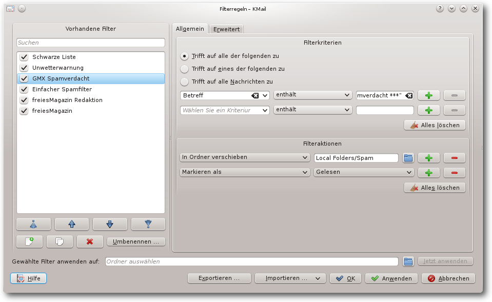
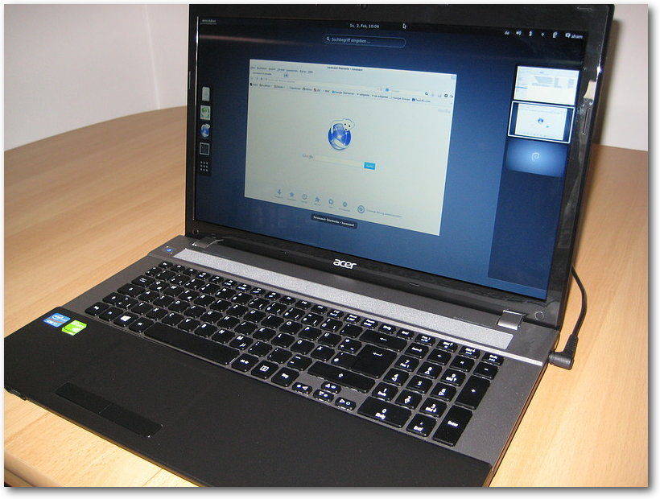

freiesMagazin Mai 2014
(ISSN 1867-7991)
Topthemen dieser Ausgabe
jEdit – der unterschätzte TexteditorGNU Emacs, Vi(m), Sublime Text, Gedit, Nano und viele weitere Antworten werden genannt, wenn man heutzutage in einer beliebigen IT-Community die Frage nach dem Lieblingseditor stellt. Jedoch gibt es mit jEdit einen Kandidaten, der in diesem Bereich stets unterschätzt wird. (weiterlesen)
Mit Tarnkappe im Netz – Das Tor Browser Bundle
Möchte man sich anonym im Internet bewegen, wird das vom Tor Browser Bundle leicht gemacht. Das Bundle erhält man auf der Projekt-Seite von Tor. Dabei ist Tor die Kurzform von The Onion Router und hat das Ziel, Verbindungsdaten von Programmen im Internet zu anonymisieren. (weiterlesen)
Vorstellung: BeagleBone Black
Viele elektronische Geräte buhlen heutzutage um die Gunst des Bastlers auf dem heimischen Sofa. Der bekannteste ist sicherlich der Raspberry Pi. Für Mikrocontroller-Freunde bietet sich der Arduino an. Ein weiterer Mini-PC im Hosentaschenformat ist das BeagleBone Black, das in dem Artikel vorgestellt werden soll. (weiterlesen)
Zum Index
Inhalt
Linux allgemeinDer April im Kernelrückblick
Anleitungen
E-Mails filtern mit KMail
Software
Multimedia- und Liedprojektion mit OpenLP
jEdit – der unterschätzte Texteditor
Mit Tarnkappe im Netz – Das Tor Browser Bundle
tmux – Das Kung-Fu der Terminal-Ninjas
Hardware
Vorstellung: BeagleBone Black
Linux auf dem Laptop (Acer Aspire V3-771G)
Community
Rezension: BeagleBone für Einsteiger
Rezension: JavaScript – Grundlagen, Programmierung, Praxis
Rezension: Eclipse IDE
Magazin
Editorial
freiesMagazin als HTML und EPUB
Leserbriefe
Veranstaltungen
Vorschau
Konventionen
Impressum
Zum Index
Editorial
Das Herz blutet
Seit der Veröffentlichung des Heartbleed-Bugs [1] in OpenSSL [2] sind gerade einmal vier Wochen vergangen. Inzwischen wurde die Berichterstattung darüber in den allgemeinen Medien weitgehend von anderen Themen verdrängt. Im Zuge der Aufdeckung der weitreichenden Überwachung der Kommunikation durch die Geheimdienste wurde schnell die Frage gestellt, ob die Lücke absichtlich in den Quellcode eingebaut wurde. Auch wenn der Programmierer selbst von einem einfachen Programmierfehler spricht, weist diese Lücke auf einen besonderen Punkt von Open-Source-Software hin: Der Quellcode ist für jeden verfügbar, kann überprüft und auf Fehler getestet werden. Bloß muss das auch gemacht werden, damit das häufig gehörte Argument, Open-Source-Software sei sicherer als proprietäre Software, auch in der Praxis zutrifft.Neue Icons gesucht!
Wir haben einen kleinen Wettbewerb ausgeschrieben, bei dem es darum geht, neue Icons für das Magazin zu gestalten. Konkret suchen wir zwei Icons, um darzustellen, dass man einen Artikel empfehlen oder kommentieren kann. Jeder ist eingeladen, mitzumachen. Die Teilnahmebedingungen stehen auf der Webseite [3] und man kann noch bis zum 22. Mai 2014 einen Vorschlag einreichen.EPUB-Erstellung
In regelmäßigen Abständen erreichen uns immer wieder Fragen bezüglich der Erstellung von freiesMagazin im Allgemeinen und besonders der Erstellung der HTML- und EPUB-Version. Wir freuen uns sehr über das Interesse und haben schon einige Anleitungen veröffentlicht, allerdings ohne ein konkretes Beispiel anzugeben. Dies möchten wir nun ändern und haben daher auf unserer Webseite [4] und in dieser Ausgabe eine detaillierte Anleitung veröffentlicht. Die dazu benötigten Beispielskripte stehen auf unserer Homepage zum Download bereit, sodass die Anleitung für alle interessierten Leser leicht nachvollzogen werden kann. Und nun wünschen wir Ihnen viel Spaß mit der neuen Ausgabe Ihre freiesMagazin-Redaktion Links[1] https://de.wikipedia.org/wiki/Heartbleed
[2] http://www.openssl.org/
[3] http://www.freiesmagazin.de/20140501-wettbewerb-neue-icons-fuers-magazin-gesucht
[4] http://www.freiesmagazin.de/20140420-freiesmagazin-als-html-und-epub-erstellen
Das Editorial kommentieren
Zum Index
Der April im Kernelrückblick
von Mathias Menzer Basis aller Distributionen ist der Linux-Kernel, der fortwährend weiterentwickelt wird. Welche Geräte in einem halben Jahr unterstützt werden und welche Funktionen neu hinzukommen, erfährt man, wenn man den aktuellen Entwickler-Kernel im Auge behält.Linux 3.15
Die Entwicklung von Linux 3.14 endete zusammen mit dem Monat März und die Entwicklung der nächsten Kernel-Version konnte in den ersten beiden Aprilwochen voranschreiten. Ein Blick auf die Änderungen der ersten Entwicklerversion könnte einen glauben lassen, dass das Aprilwetter sehr fruchtbar war, denn der Patch ist einer der umfangreichsten. In der Freigabe-E-Mail zum -rc1 [1] erklärte Torvalds dann auch, dass es zwar schon größere Patches gab, die mehr geänderte Quelltextzeilen aufwiesen, dies jedoch immer auf etwas Bestimmtes zurückgeführt werden konnte. Diesmal sind es jedoch nicht einzelne Neuerungen, die das vergleichsweise große Volumen ausmachen, sondern einfach nur sehr viele, teilweise kleine Änderungen. Diese verteilen sich denn auch großzügig über alle Bereiche des Kernels, auch wenn der Treiber-Bereich wieder die meisten Änderungen abbekam. Ein guter Teil davon wiederum entfällt auf den Staging-Bereich, der mit einem Treiber für neue WLAN-Chips aus dem Hause Realtek gesegnet wurde. Greg Kroah-Hartman reichte die Aufnahme des Treibers noch nach, da entsprechende Geräte bereits in aktuellen Notebooks verbaut werden. Torvalds warnte die Entwickler auch, dass er keine Änderungen aufnehmen wird, die das Merge Windows verpasst haben, gerade auch aufgrund des großen Umfangs von -rc1. „Und am siebenten Tag gab es wieder die -rc-Veröffentlichung, gemäß den beim Kernel Summit im Jahre 2004 festgelegten Schriften“ leitete – frei übersetzt – die Freigabe-E-Mail für Linux 3.15-rc2 [2] ein. Auch diese Entwicklerversion fällt etwas größer aus als meist üblich. Zum einen wurde der RTL8187se-Treiber aus dem Staging-Bereich entfernt, da für die entsprechenden WLAN-Chipsätze bereits ein funktionsfähiger Treiber vorliegt. Zum anderen sorgten Aufräumarbeiten im Umfeld der Grafikumgebung mit nur einem Commit für eine große Anzahl Änderungen an Dateien [3]. Über 300000 Codezeilen in 471 Dateien blähen den Patch auf 12 MB als gzip-Archiv [4] auf und platzieren 3.15-rc2 somit in den Spitzenrängen der größten Patches für Entwicklerkernel. Dagegen erscheint die dritte Entwicklerversion [5] etwas deplaziert, mit weniger als 250 geänderten Dateien und unter 5000 Quelltextzeilen. Doch stellt sie eher die Rückkehr zu den in der 3er-Kernel-Reihe üblichen kleinen und überschaubaren Entwicklungsschritten dar. Und so liest man auch im Shortlog fast ausschließlich von Korrekturen und Fixes.Systemd
An einem Start-Parameter entzündete sich eine Diskussion zwischen Linux- und systemd-Entwicklern [6]. systemd wertete den Parameter debug aus und sorgte so dafür, dass nicht nur der Linux-Kernel sondern auch systemd selbst Daten zur Fehlersuche mitschrieb und aufgrund der Menge der mitgeloggten Informationen Rechner in einen nicht mehr nutzbaren Zustand kommen konnten. Die Diskussion wurde teilweise emotional geführt und, ursprünglich auf der Linux-Kernel-Mailing-Liste bald auch nach Google+ geforkt. Greg Kroah-Hartman versuchte im Verlauf zu beruhigen und unterbreitete einen Vorschlag, statt debug künftig systemd.debug zu verwenden. Dem folgten die systemd-Entwickler nicht, sondern lassen systemd künftig weniger mitschreiben, um das System auch beim Debugging nicht zu überlasten [7].Netcat
Rund um den Kernel gibt es auch immer wieder kleine Anekdoten zu berichten: So hat eine Seattler Band mit dem nerdigen Namen „netcat“ [8] ihr neuestes Album unter anderem als Kernel-Modul veröffentlicht [9]. Auf GitHub stehen die Quellen für „Cycles Per Instruction“ bereit [10] und auch Anweisungen zum Kompilieren des Albums sind dort zu finden. Das damit erzeugte Kernel-Modul stellt nach dem Laden durch den Kernel ein Gerät /dev/netcat bereit, dessen Ausgabe auf einen Audio-Player umgeleitet werden kann. Wem dieses Vorgehen jedoch zu aufwändig erscheint, der kann „Cycles Per Instruction“ auf Bandcamp [11] anhören, als Download kaufen oder auch als Musikkassette [12] bestellen. Links[1] https://lkml.org/lkml/2014/4/13/121
[2] https://lkml.org/lkml/2014/4/20/92
[3] https://git.kernel.org/cgit/linux/kernel/git/torvalds/linux.git/commit/drivers/video/fbdev?id=f7018c21350204c4cf628462f229d44d03545254
[4] https://de.wikipedia.org/wiki/Gzip
[5] https://lkml.org/lkml/2014/4/27/282
[6] http://www.pro-linux.de/-0h2151d5
[7] http://www.pro-linux.de/-0h2151e2
[8] http://www.netcat.co/
[9] http://www.pro-linux.de/-0h21521c
[10] https://github.com/usrbinnc/netcat-cpi-kernel-module
[11] http://netcat.bandcamp.com/
[12] https://de.wikipedia.org/wiki/Musikkassette
| Autoreninformation |
| Mathias Menzer (Webseite) behält die Entwicklung des Linux-Kernels im Blick, um über kommende Funktionen von Linux auf dem laufenden zu bleiben. |
Diesen Artikel kommentieren
Zum Index
E-Mails filtern mit KMail
von Dr. Diether Knof Fast alle E-Mail-Programme, auch die Web-basierten, bieten einen Filtermechanismus an. Damit lassen sich abhängig von Absender und Inhalt automatisch vordefinierte Aktionen für E-Mails durchführen. Aus der Praxis am bekanntesten dürfte das Filtern von Spam sein, bei dem E-Mails bewertet werden und abhängig davon, ob sie als Spam klassifiziert sind, in den Spam-Ordner oder in den Posteingang gelegt oder sogar automatisch gelöscht werden. In diesem Artikel wird konkret die Anwendung des Filtermechanismus des E-Mail-Programms KMail [1] von KDE erläutert. Die Verwendung der Filter wird im Folgenden an verschiedenen Beispielen gezeigt. Die E-Mails werden beim Empfang oder erst nach dem Lesen entsprechend Absender und Stichworten in Ordner sortiert. Es wird auf die Filterung von Spam eingegangen und gezeigt, wie E-Mails automatisch verändert werden können. Die meisten der Filter lassen sich auch bei anderen E-Mail-Programmen wie Thunderbird und bei Web-Mail-Clients anwenden. Die Beispiele sollen auch Anregungen zur Verwaltung der E-Mails geben. Hinweis: In den Beispielen sind ausschließlich fiktive E-Mail-Adressen angegeben; diese müssen für den Einsatz auf den jeweiligen Fall angepasst werden.Allgemeines
KMail lässt sich einfach über den Paketmanager installieren, es ist Teil von kontact, der PIM-Suite von KDE [2]. Beim ersten Aufruf von KMail wird ein Wizard ausgeführt, der durch die Einrichtung eines E-Mail-Kontos führt. Hierauf wird in diesem Artikel nicht weiter eingegangen. Die Filter werden in KMail im Menü „Einstellungen“ über den Menüpunkt „Filter einrichten …“ bearbeitet. Filterregeln.
Das Fenster „Filterregeln“ enthält auf der linken Seite eine Liste der eingerichteten Filter sowie Schaltflächen zur Steuerung der Reihenfolge der Filter, zum Hinzufügen, Kopieren, Löschen und Umbenennen einzelner Filter. Die Filter werden für alle eingehenden E-Mails von oben nach unten geprüft. Greift ein Filter, werden die definierten Filteraktionen durchgeführt und normalerweise die Filterung für diese E-Mail beendet. Auf der rechten Seite des Fensters kann der in der Liste gewählte Filter verändert werden. Im Reiter „Allgemein“ ist der eigentliche Filter definiert, dieser besteht immer aus den folgenden zwei Bereichen:
- Anhand der „Filterkriterien“ (rechter oberer Block im Fenster) wird entschieden, ob der Filter greifen soll oder nicht. Die „Filterkriterien“ verändern die E-Mail nicht.
- Greift der Filter, werden die „Filteraktionen“ (rechter unterer Block im Fenster) durchgeführt. Hierbei kann auch die E-Mail verändert werden, darauf wird später eingegangen.
Verschieben in einen Ordner
Filter lassen sich gut verwenden, um E-Mails automatisch in unterschiedliche Ordner abzulegen. Damit lassen sich eingehende E-Mails gleich sortieren (dieses Beispiel) und auch das Archivieren abhängig vom Empfänger/Inhalt wird einfach (siehe Beispiel „freiesMagazin“). Der erste Anwendungsfall ist das automatische Verschieben von eingehenden E-Mails eines bestimmten Absenders, in diesem Fall von unwetter@fiktivemail.de in einen separaten Ordner „Unwetterwarnung“. Zuerst wird der Unterordner „Arbeit“ unter dem Posteingang angelegt: In der Ordnerübersicht von KMail ein Rechtsklick mit der Maus auf den Ordner „Posteingang“, im Kontextmenü „Ordner hinzufügen …“ auswählen und als Name „Unwetterwarnung“ angeben. Ein Ordner lässt sich auch hinzufügen, wenn das Fenster „Filterregeln“ geöffnet ist. Um den Filter anzulegen ist es am einfachsten, per Rechtsklick auf eine entsprechende E-Mail in der Nachrichtenliste von KMail das Kontextmenü aufzurufen und dort im Untermenü „Filter anlegen …“ den Punkt „Nach Absender filtern …“ auswählen. Es wird automatisch ein Filter angelegt, in diesem Fall mit Namen „<From>: unwetter@fiktivemail.de“. Der Name lässt sich über die Schaltfläche „Umbenennen“ in „Unwetterwarnung“ ändern.Filter „Unwetterwarnung“.
Das Filterkriterium „Von enthält unwetter@fiktivemail.de“ ist bereits das Gewünschte: es wird nach dem Absender gefiltert. Bei den Filteraktionen ist „In Ordner verschieben“ vorausgewählt. Mit einem Linksklick auf das Ordnersymbol rechts neben dem Feld „Ordner auswählen“ wird die Ordnerliste angezeigt. Hier ist dann der Ordner „Unwetterwarnung“ auszuwählen. Auch an dieser Stelle kann der Zielordner noch erstellt werden. Der Filter wird für alle eingehenden E-Mails automatisch angewendet – dies ist die Voreinstellung für neue Filter (im Reiter „Erweitert“). Wenn also der Absender unwetter@fiktivemail.de enthält, wird die E-Mail statt im Posteingang im Ordner „Unwetterwarnung“ abgelegt.
Mehrere Filterkriterien
Der nächste Anwendungsfall ist das Archivieren der E-Mails zu freiesMagazin in einen separaten Ordner „freiesMagazin“. Auch dieser Ordner sollte erst einmal erstellt werden. Für diesen Filter wird in den Filterregeln (Erinnerung: Menü „Einstellungen -> Filter einrichten …“) ein neuer Filter über die entsprechende Schaltfläche (ganz links unten) erstellt und mittels „Umbenennen“ in „freiesMagazin“ umbenannt. Als nächstes werden die Filterkriterien angegeben. Ein Filterkriterium besteht grundsätzlich aus den folgenden drei Elementen:- Das erste Element gibt an, was überprüft werden soll.
- Das zweite Element gibt an, welche Überprüfung stattfinden soll. Die Auswahl ist abhängig vom ersten Element. Für die meisten Anwendungen ist „enthält“ passend.
- Das dritte Element gibt an, wonach überprüft werden soll.
Filter „freiesMagazin“.
Für freiesMagazin werden mehrere verschiedene Filterkriterien eingerichtet:
- „Von enthält @fm-fiktiv.de“ filtert alle E-Mails, die von E-Mail-Adressen der Domain fm-fiktiv.de gehen, also zum Beispiel von redaktion@fm-fiktiv.de.
- „Alle Empfänger enthält @fm-fiktiv.de“ filtert alle E-Mails, die man selber die angegebene Domain sendet. Der Unterschied von „Alle Empfänger“ zu „An“ ist, dass bei ersterem auch die Empfänger einer Kopie (E-Mail-Felder CC und BCC [3]) berücksichtigt werden.
- „Nachrichteninhalt enthält freiesMagazin“ filtert alle E-Mails, die irgendwo im Nachrichtentext „freiesMagazin“ enthalten.
Filter „freiesMagazin“, Erweiterte Einstellungen.
Nun soll der Filter nicht automatisch auf eingehende E-Mails angewendet werden; diese sollen erst einmal im Posteingang verbleiben. Stattdessen soll eine entsprechende E-Mail erst nach dem Lesen umsortiert werden. Dafür wird der Filter so eingerichtet, dass er nur manuell aufgerufen wird. Dazu muss im Reiter „Erweitert“ die Einstellung „Diesen Filter auf eingehende Nachrichten anwenden“ abgewählt werden. Die Einstellung „Diesen Filter bei der manuellen Filterung anwenden“ ist in der Voreinstellung bereits aktiv, hierfür ist nichts weiter zu tun. Weiterhin sollte „Diesen Filter auf gesendete Nachrichten“ ausgewählt werden. Damit werden versendete E-Mails zu freiesMagazin gleich im Ordner „freiesMagazin“ abgelegt statt in „Versendete Nachrichten“. Ist der Filter wie oben eingerichtet, passiert beim Empfang einer entsprechenden E-Mail nichts. Wird nach dem Lesen einer E-Mail zu freiesMagazin der Filter manuell aufgerufen, dann wird die E-Mail automatisch in den Ordner „freiesMagazin“ verschoben. Mit der Maus werden hierzu über das Kontextmenü der E-Mail (Rechtsklick auf die E-Mail in der E-Mail-Liste) im Untermenü „Filter anwenden“ mit „alle Filter anwenden“ die eingerichteten Filter mit Einstellung „Diesen Filter bei der manuellen Filterung anwenden“ auf die E-Mail angewendet. Dies geht auch für mehrere markierte E-Mails. Schneller geht es per Tastatur, mit der Tastenkombination „Strg“ + „J“ werden auf die markierten E-Mails, das ist normalerweise die, die gerade geöffnet ist, alle Filter angewendet, die für die manuelle Filterung aktiviert sind. Ausgehende E-Mails werden automatisch in dem gewünschten Ordner abgelegt. Mit mehreren solcher Filter lassen sich die meisten eingehenden und ausgehenden E-Mails einfach in den entsprechenden Ordner verschieben, zum Beispiel pro Kommunikationspartner ein eigener Ordner. Dann reicht es, nach dem Lesen einer E-Mail „Strg“ + „J“ zu drücken.
Unerwünschte Mails löschen
Unerwünschte E-Mails lassen sich leicht löschen. Der schwierige Teil dabei ist, dem Computer beizubringen, was unerwünscht bedeutet. Der erste und einfachste Schritt ist es, E-Mails entsprechend ihrem Absender oder Betreff zu löschen. Dies deckt zwar nur einen meist geringen Teil ab, aber jedes bisschen hilft. Der Filter soll „Schwarze Liste“ (von engl. „blacklist“ [4]) heißen und enthält in den Filterkriterien Absender oder Betreffs, deren entsprechende E-Mails gelöscht werden sollen. Bei den Filterkriterien muss „Trifft auf eines der folgenden zu“ ausgewählt sein. Beispiele sind:- „Von enthält werbung@fiktivemail.de“
- „Betreff enthält Jetzt Ihre Kleinanzeigen hervorheben“
Filter „Schwarze Liste“.
Die Filteraktion ist „Nachricht löschen“, KMail zeigt dann auch völlig zu Recht die Warnung „Seien Sie vorsichtig, es werden E-Mails gelöscht“. Bei diesem Filter ist es wichtig, nur Filterkriterien anzugeben, die sicher nur auf E-Mails passen, die auch gelöscht werden sollen. Ein allgemeiner Spam-Filter ist dies nicht. Außerdem ist es immer besser, Newsletter und ähnliches abzubestellen oder dem Absender direkt Bescheid zu geben, als die E-Mails erst zu empfangen und dann automatisch zu löschen.
Die Reihenfolge der Filter
Bei vielen Spam-E-Mails ist man nicht als Empfänger eingetragen. Bei den regulären E-Mails hingegen schon. Daraus ergibt sich der folgende einfache Spam-Filter (mit Bezeichnung „Einfacher Spamfilter“).Filter „Einfacher Spamfilter“.
Bei den Filterkriterien müssen alle folgenden zutreffen (meineAdresse@fiktivemail.de sei dabei die eigene E-Mail-Adresse):
- „Von ist nicht im Adressbuch“
- „Alle Empfänger enthält nicht meineAdresse@fiktivemail.de“
- „In Ordner verschieben Spam“
- „Markieren als Gelesen“
Filter „Einfacher Spamfilter“, Erweiterte Einstellungen.
Soll der Spam-Filter nicht erneut bei der manuellen Filterung herangezogen werden, muss unter „Erweitert“ die Einstellung „Diesen Filter bei der manuellen Filterung anwenden“ abgewählt sein.
Weiterleiten
KMail bietet auch an, E-Mails automatisch an eine weitere Adresse zu senden. Als nächstes sollen daher E-Mails, die „freiesMagazin“ enthalten, aber nicht an die Redaktionsadresse gesendet wurden, an die Redaktionsadresse umgeleitet werden.Filter „freiesMagazin Redaktion“.
Dafür wird der Filter „freiesMagazin Redaktion“ eingerichtet. Die Filterbedingungen orientieren sich am Filter „freiesMagazin“:
- „Alle Empfänger enthält nicht redaktion@fm-fiktiv.de“ filtert alle E-Mails, die nicht bereits an die Redaktion geschickt wurden
- „Nachrichteninhalt enthält freiesMagazin“ filtert alle E-Mails, die irgendwo im Nachrichtentext „freiesMagazin“ enthalten.
Filter „freiesMagazin Redaktion“, erweiterte Einstellungen.
Auch bei diesem Filter sollte „Bearbeitung hier beenden, falls Filterbedingung zutrifft“ abgewählt sein, damit die E-Mails anschließend noch weitere Filter durchlaufen können (falls sie zum Beispiel doch gleich beim Empfang in einen separaten Ordner abgelegt werden sollen). Noch wichtiger ist es, „Diesen Filter bei der manuellen Filterung anwenden“ abzuwählen, da ansonsten bei jeder manuellen Filterung (zum Beispiel für den obigen Filter „freiesMagazin“) wieder eine Kopie der E-Mail an die Redaktion versandt wird. In der Liste „Vorhandene Filter“ sollte dieser Filter nach der Spam-Bekämpfung liegen (die Redaktion wird es danken), aber vor dem Filter „freiesMagazin“, falls bei diesem die Einstellung „Diesen Filter auf eingehende Nachrichten anwenden“ ausgewählt ist, die E-Mails also gleich beim Empfang in einen Ordner verschoben werden. Man kann für Umleitungen anstelle des Filters von KMail auch den Filter beim E-Mail-Provider verwenden. Damit wird eine E-Mail gleich beim Empfang beim Provider weitergeleitet und nicht erst, wenn sie mit KMail abgerufen wird.
Betreff verändern
GMX markiert E-Mails, die es als Spam identifiziert hat, durch ein „*** GMX Spamverdacht ***“ im Betreff. Diese E-Mails können daher auch leicht durch einen Filter („GMX Spamverdacht“) in den Ordner „Spam“ verschoben werden:Filter „GMX Spamverdacht“.
Das Filterkriterium ist „Betreff enthält *** GMX Spamverdacht ***“, und die Filteraktionen sind:
- „In Ordner verschieben Spam“
- „Markieren als Gelesen“
Filter „Kein Spam“.
Bei den Filterkriterien ist „Trifft auf alle Nachrichten zu“ ausgewählt. Die Filteraktionen sind
- „Durch Programm leiten sed '1,/^$/s/Subject: \*\*\* GMX Spamverdacht \*\*\* \+/Subject: /'“ – Dieser Aufruf von sed entfernt im Betreff den Text „*** GMX Spamverdacht ***“.
- „In Ordner verschieben Posteingang“
- „Markieren als Ungelesen“
Filter „Kein Spam“, erweiterte Einstellungen.
In den erweiterten Einstellungen wird „Diesen Filter auf eingehende Nachrichten anwenden“ abgewählt und „Diesen Filter zum Menü „Filteraktionen anwenden“ hinzufügen“ sowie „Diesen Filter zur Werkzeugleiste hinzufügen“ ausgewählt. Damit befindet sich in der Werkzeugleiste eine Schaltfläche „Kein Spam“, mit der eine von GMX irrtümlich als Spam klassifizierte E-Mail mit bereinigten Betreff in den Posteingang verschoben werden kann. Wie an diesem Beispiel gezeigt wird, bietet KMail in den Filteraktionen auch die Möglichkeit, eine E-Mail zu verändern. Dies ist zuweilen eine sehr nützliche Funktion, es ist aber Vorsicht geboten, um nicht aus Versehen eine E-Mail damit zu zerstören. Solche Filter sollten daher immer auf Kopien der E-Mails getestet werden. In diesem Beispiel wurde nur der E-Mail-Kopf mit den Metadaten (in diesem Fall der Betreff) geändert. Eine Änderung des E-Mail-Textes ist auch möglich, sollte aber nur in Ausnahmefällen geschehen, da sonst zum Beispiel digitale Signaturen ungültig werden. Leider funktioniert dieses Ersetzen in der verwendeten Version 4.11.5 von KMail ausschließlich bei einem manuellen Aufruf. Ein automatisches Bereinigen des Betreffs bei allen eingehenden E-Mails funktioniert nicht. Außerdem wird zwar der Betreff in der E-Mail-Ansicht aktualisiert, aber nicht in der E-Mail-Liste.
Exkurs: Der sed-Befehl
Viele Leser stellen sich sicherlich die Frage, was der Befehl sed '1,/^$/s/^Subject: \*\*\* GMX Spamverdacht \*\*\* \+/Subject: /' genau bewirkt. Dieser Filter nutzt das Programm sed [5], um in der Nachricht den Betreff zu ersetzen. Eine Einführung in sed gibt es in \fm{} 03/2010 [6]. Der Editierbefehl besteht aus einer Bereichsangabe und dem Ersetzen-Befehl:- 1,/^$/ gibt an, dass für das Suchen/Ersetzen nur der Bereich vom Anfang der Datei (1) bis zur ersten leeren Zeile (/^$/) betrachtet werden soll. Die leere Zeile trennt die Kopfzeilen vom Inhalt der E-Mail. Die Zeile im E-Mail-Kopf, die mit „Subject: “ beginnt, gibt den Betreff an.
- s gibt an, dass anschließend ein Ersetzen-Befehl kommt.
- /^Subject: \*\*\* GMX Spamverdacht \*\*\* */Subject: / ersetzt die Zeichenkette „Subject: *** GMX Spamverdacht ***“ sowie darauf folgende Leerzeichen durch „Subject: “, entfernt also den unerwünschten Text. Das ^ steht für den Zeilenanfang. Das \* steht für das Zeichen „*“, das * steht für kein oder mehrere Leerzeichen.
Fazit
Die Filter in KMail sind einfach einzurichten und recht mächtig. Sind sie eingerichtet, ist das Verwalten der E-Mails mit KMail ein Kinderspiel. Einige E-Mails (wie „Unwetterwarnung“) werden direkt beim Eingang in entsprechende Verzeichnisse verschoben (auch günstig für Mailinglisten). Mit „Strg“ + „J“ können gelesene E-Mails in entsprechenden Ordnern (wie „freiesMagazin“) archiviert werden. Durch eine Filteraktion, die das Durchleiten durch ein externes Programm/Skript ermöglicht, lassen sich auch ausgefallene Anforderungen umsetzen. Für eine bessere Spam-Filterung wird in einem separaten Artikel das Einbinden des Programms bogofilter [7] in KMail beschrieben. Links[1] http://userbase.kde.org/KMail/de
[2] http://userbase.kde.org/Kontact/de
[3] http://blindkopie.de/
[4] https://de.wikipedia.org/wiki/Schwarze_Liste#Schwarze_Listen_im_Kommunikationsbereich
[5] https://de.wikipedia.org/wiki/Sed_(Unix)
[6] http://www.freiesmagazin.de/freiesMagazin-2010-03
[7] https://de.wikipedia.org/wiki/Bogofilter
| Autoreninformation |
| Dr. Diether Knof ist seit 1998 Linux-Anwender. Vor einem Jahr ist er privat vom E-Mail-Client mutt auf KMail umgestiegen und hat in dem Zuge seine in procmail über die Jahre eingerichteten Filter auf KMail übertragen. |
Diesen Artikel kommentieren
Zum Index
Multimedia- und Liedprojektion mit OpenLP
von Jens Dörpinghaus Eine besondere Nische für Projektionssoftware findet sich – vor allem, aber nicht ausschließlich – in Kirchengemeinden, in denen die Liederbücher durch die Beamerprojektion der Liedtexte abgelöst werden. Dieser Artikel zeigt, dass es mit OpenLP auch für diesen Einsatzbereich ein hervorragendes freies Softwareprojekte gibt. Neben den eigentlichen Liedtexten kommen auch vermehrt Video- und Bildeinblendungen oder Präsentationen für die Predigt zum Einsatz. Da das Konzept von freier Software eigentlich sehr gut mit christlichen Werten harmoniert, gibt es verschiedene freie Softwareprojekte, von denen im Folgenden das wohl umfangreichste Projekt – OpenLP [1] – vorgestellt werden soll. Auf der anderen Seite sind Kirchengemeinden nicht gerade als Hort moderner Technik bekannt und so ist es nicht verwunderlich, dass, als eine kommerzielle Software, SongBeamer [2] sehr verbreitet ist. Eine Initiative für freie Software in Kirchen ist LUKi [3] (Linux User im Bereich der Kirchen), auf deren Homepage unter Anderem ein Artikel mit weiteren Informationen zu OpenLP zu finden ist.OpenLP und vergleichbare Produkte
Der größte Vorteil von OpenLP gegenüber vergleichbaren Produkten ist zum ersten, dass es sich um freie Software (GNU General Public License) handelt und zum zweiten, dass es für alle gängigen Betriebssysteme (Linux, BSD, Windows, MacOS X) verfügbar ist. Es gibt kein freies Programm mit einem vergleichbaren Funktionsumfang. Gegenüber kommerziellen Alternativen wie SongBeamer muss allerdings auf Funktionen wie Akkordprojektion oder das Umschalten zwischen Sprachen verzichtet werden; im Gegenzug unterstützt OpenLP von Haus aus UTF-8 und kann sehr leicht mit anderer Software zusammen genutzt werden. Inwiefern einzelne Punkte relevant sind, hängt natürlich von den Anforderungen der Gemeinde ab.Installation
Die Software kann von der Homepage von OpenLP bezogen werden. Für die meisten Distributionen stehen – sofern OpenLP nicht in der Paketverwaltung vorhanden ist – entsprechende Pakete bereit.Erster Start
Startet man OpenLP das erste Mal, so kann man mit dem Einrichtungsassistenten erste Lieder, Bibeln und Designs hinzufügen. Diese zunächst eher kleine Auswahl kann später sukzessive erweitert werden.Eine bereits laufende Instanz von OpenLP.
Die Standardansicht mit Medienverwaltung, Vorschau, Liveansicht und Ablaufverwaltung kann jeweils auch in eine einfache Einrichtenansicht oder Liveansicht geändert werden, wodurch die Darstellung übersichtlicher wird. Bedient werden kann OpenLP mit der Maus oder auch komplett über Tastenkürzel. Es wird, wann immer möglich, auf weitere Fenster verzichtet. Dadurch ist OpenLP – im Gegensatz zu anderen Programmen – schnell und übersichtlich in einer Ebene bedienbar. Neue Lieder können von SongSelect [4] (aber auch aus anderen Projektionsprogrammen wie beispielsweise SongBeamer) importiert und mit wenigen Mausklicks einem aktuellen Ablauf hinzugefügt werden. Sind sie einmal in der Datenbank vorhanden, können sie in der Medienverwaltung unter anderem per Titel, Volltextsuche oder Liederbuch gefunden werden. Lieder können aber natürlich auch manuell „abgetippt“ werden. Insbesondere ist hervorzuheben, dass die Reihenfolge der Strophen in jedem Ablauf manuell geändert werden kann, ohne die Datenbank selber zu manipulieren. Alle Daten werden in einem Ablauf gespeichert.
Lieder bearbeiten.
Liedsuche nach Liederbüchern.
Ebenso schnell können Bibelstellen, ganze Präsentationen (die über Libre bzw. OpenOffice dargestellt werden), Bilder, Videos oder Sonderfolien dem Ablauf hinzugefügt werden.
Besondere Funktionen bei der Projektion
Oft genutzte Funktionen bei der Projektion sind beispielsweise das automatische Abspielen von Folien und Bildern (etwa bei Informationen vor dem Gottesdienstbeginn) oder die zeitgenaue Wiedergabe von Videos. Weiter bietet sich die Möglichkeit, Hinweistexte einzublenden oder Folien mit Hintergrundmusik zu hinterlegen. Es gibt zwar nicht die Möglichkeit, wie in Alternativprogrammen, in Liedern automatisch zwischen verschiedenen Sprachen zu wechseln. Durch die Konfigurierbarkeit der Darstellung kann aber einfach ein weiteres, zweisprachiges Lied angelegt werden. Sind beide Sprachen schon in OpenLP vorhanden, geht dies mit einem kleinen externen Tool sogar in Sekundenschnelle.Darstellung mehrsprachiger Lieder.
Die Darstellung von OpenLP kann aber auch transparent über andere Bildschirmausgaben gelegt werden. Dadurch ist es möglich, etwa über Videos (Pro Christ, Taufe o.ä.) oder andere Programme, Liedtexte und andere Inhalte zu projizieren. Auch das Wechseln zwischen verschiedenen Programmen lässt sich im laufenden Betrieb einfach umsetzen.
Designs
In OpenLP wird die Darstellung von Folien über sogenannte Designs gelöst. Von einfachen weißen Texten auf schwarzem Hintergrund bis hin zu Bildhintergründen kann je nach Art der Veranstaltung oder Geschmack alles verändert werden. Ein sehr interessanter Punkt ist, dass diese Designs jeweils für einen kompletten Ablauf geändert werden können, Liedern und Folien aber auch ein individuelles Design zugewiesen werden kann. Dieses Verhalten ist konfigurierbar und nützlich. So kann ein Lied aus dem Kindergottesdienst, das dort anders, etwa farbiger und größer dargestellt wird, im Ablaufplan eines normalen Gottesdienstes auch ohne Änderungen auf die dort vorgegebene Art dargestellt werden.Bühnenmonitor und Fernbedienung
Ein weiteres Feature von OpenLP ist der Bühnenmonitor, der direkt mit OpenLP installiert wird. Dieser kann entweder für die Musiker auf der Bühne oder aber auch für Menschen, die die Projektionsfläche nicht einsehen können, genutzt werden.Der Bühnenmonitor.
Als Fernbedienung stehen wahlweise eine Android-App oder eine Weboberfläche zur Verfügung. Erstere kann über die Homepage oder den App-Store bezogen werden, letztere ist wie der Bühnenmonitor Bestandteil von OpenLP. Mit beiden kann OpenLP von einem Handy, einem Tablet oder einem anderen PC fernbedient werden. Dies ermöglicht z. B. einem Musiker oder dem Prediger das selbsttätige Bedienen der Projektion.
Fernsteuerung über die Android-App.
Fernsteuerung über die Weboberfläche.
Für alle diese Möglichkeiten muss eine Netzwerkverbindung zwischen den Endgeräten und dem Projektionsrechner bestehen.
Zusammenfassung
Auch wenn einige Features noch fehlen, so braucht sich OpenLP nicht vor alternativen Programmen zu verstecken. In einigen Dingen ist OpenLP sogar überlegen. Es bietet alle grundlegenden Funktionen, die in einer Gemeinde genutzt werden und wohl auch viele, die nie benötigt werden. Da es eine kleine, aber recht aktive Entwicklergemeinde gibt, bekommt man schnell Hilfe und neue Features werden zeitnah implementiert. OpenLP ist ein guter Grund für Kirchengemeinden, sich mit freier Software auseinander zu setzen. Geld kann durchaus sinnvoller investiert werden als in proprietäre Software. Links[1] http://openlp.org/
[2] http://www.songbeamer.de/
[3] http://luki.org/
[4] http://ccli.de/songselect/
| Autoreninformation |
| Jens Dörpinghaus benutzt seit vielen Jahren ausschließlich freie Software. |
Diesen Artikel kommentieren
Zum Index
jEdit – der unterschätzte Texteditor
von Candas Tümer GNU Emacs, Vi(m), Sublime Text, Gedit, Nano und viele weitere Antworten werden genannt, wenn man heutzutage in einer beliebigen IT-Community die Frage nach dem Lieblingseditor stellt. Jedoch gibt es mit jEdit einen Kandidaten, der in diesem Bereich stets unterschätzt wird. jEdit [1] ist ein in der Programmiersprache Java geschriebener, stark erweiterbarer, freier (GNU GPL 2.0 [2]) Texteditor, der sich schnell installieren und konfigurieren lässt. Dank seiner plattformunabhängigen Infrastruktur ist jEdit auf jedem Betriebssystem, auf dem die Java Runtime Environment 1.6 [3] oder höher installiert ist, lauffähig und bietet unter anderem folgende Features:- erweiterbare Plug-in-Architektur mit über 200 vorhandenen Plug-ins aus dem Repository (219 zum Zeitpunkt der Artikelverfassung)
- eingebaute Makrosprache (in BeanShell [4] – eine dynamische Skriptsprache für die JVM) und die Möglichkeit, Benutzeraktionen aufzuzeichnen und als Makro zu verwenden
- Code-Einrückung und Syntax-Highlighting für mehr als 200 Sprachen (jEdit 5.1: 211)
- eine große Anzahl an unterstützen Zeichenkodierungen (jEdit 5.1: 169)
- anpassbare Tastenkürzel inkl. vordefinierter Keymaps für Emacs, Intellij IDEA etc.
- mehrere Suchmodi (Suche in aktiver Datei, in offenen Dateien oder in allen Dateien eines Verzeichnisses (auf Wunsch rekursiv)) inkl. Regex-Unterstützung [5]
jEdit-Hauptbildschirm.
Geschwindigkeit
Im Kern von jEdit steckt Java – eine Sprache, die gerade in der GNU/Linux-Community mit vielen Vorurteilen zu kämpfen hat. Deshalb wird dem Texteditor immer wieder unterstellt, dass er generell langsamer ist als die Konkurrenz. Auch wenn beim Phänomen der Geschwindigkeit viele verschiedene Faktoren eine Rolle spielen und man eigentlich differenzieren müsste, ob man die reine Startgeschwindigkeit mit beziehungsweise ohne Plug-ins oder die durchschnittliche Bearbeitungsdauer bestimmter, standardisierter Aufgaben zur Laufzeit meint, wird der ehrliche Nutzer hier das Vorurteil in den meisten Fällen nicht bestätigen können. Denn jEdit stellt beispielsweise selbst Logdateien mit einigen Hunderttausend Zeilen in der Regel schneller dar und durchsucht diese auch noch schneller als die meisten FLOSS-Texteditoren [6].Installation und Konfiguration
Das Paket jedit lässt sich über die Paketverwaltung installieren. Alternativ wird der Texteditor aber auch als Paket für FreeBSD, JPackage [7] (Java-Paket-Repository für RPM-basierte GNU/Linux-Distributionen) oder als plattformunabhängige Installationsdatei angeboten. Bereits nach der Installation enthält jEdit eine für viele Zwecke geeignete Kombination an Features und ist ohne weitere Konfiguration sofort einsetzbar. Für die allgemeine Konfiguration bietet der Dialog „Extras -> Globale Optionen“ alles, was das Entwicklerherz begehrt: Von den Einstellmöglichkeiten für Lesezeichen, Definitionen von Abkürzungen, Einstellungen für Zeichenkodierungen, Tastenkürzel, Syntaxhervorhebung bis hin zu kompletten Ausgestaltungsmöglichkeiten der Oberfläche und der Farben des Editors – die gesamte Umgebung ist nach eigenen Wünschen spezialisierbar.Plug-ins
In der Standardinstallation fungiert jEdit als ein „Schweizer Taschenmesser“ für Entwickler [8]. Es ist auch ohne weiteren Aufwand möglich, den Editor mit Hilfe von Plug-ins um weitere Funktionalitätsbereiche zu erweitern.Der jEdit-Plug-in-Manager.
So lässt sich jEdit in eine vollständige IDE [9] umwandeln, die Autovervollständigung, Debugging, Compilerintegration etc. anbietet. Der Texteditor lässt sich auch für eine schnelle Entwicklung von Webprojekten, unkomplizierte Dateivergleiche mit Hilfe von Diff, FTP-Aufgaben, LaTeX-Arbeiten, XML-Verarbeitung oder Versionsverwaltung nutzen. Folgende Plug-ins (zu finden auf der jEdit-Homepage [10]) stellen unabhängig vom Verwendungszweck eine sinnvolle Ergänzung für jEdit dar:
- BufferTabs (Verwaltung von offenen Dokumenten in Tabs)
- EditorScheme (erleichtert die vollständige Designanpassung des Editors an die eigenen Wünsche)
- ErrorList (nützlich für viele Plug-ins)
- Console (Integration für die Systemshell, Beanshell und eine Schnittstelle für weitere benutzerdefinierte Shells)
- MacroManager (einfache Makroverwaltung)
- Project Viewer (Gruppierung von Dokumenten in Projekten)
- Sessions (Sitzungsverwaltungsfunktionen)
- TextTools (nützliche Textmanipulationsfunktionen)
Makros
Mit Hilfe des Plug-ins MacroManager lassen sich die Makros in jEdit sehr leicht verwalten. Alternativ kann man die Makros auch unter ~/.jedit/macros speichern. Das Hinzufügen der entsprechenden Makrodatei (Beanshell-Datei) und das Reinitialisieren des Makromenüs („Makros -> Makro-Menü neu aufbauen“) reicht aus, um ein Makro in den Editor zu integrieren. Folgendes ist für viele Zwecke empfehlenswert:- Gotodefinition (einfaches Navigieren im Quellcode)
- LineFilter (zeilenweises Filtern von Dateien mit Regex-Unterstützung)
- Open This (öffnen des ausgewählten Pfades)
Weitere Informationen
Neben der Möglichkeit, jEdit mit Hilfe von BeanShell-Skripten um eigene Funktionalitäten zu erweitern, existieren weitere Möglichkeiten der Spezialisierung des Editors, die durch Plug-ins realisiert werden können. So ist es beispielsweise möglich, nach der Installation des Plug-ins „JythonInterpreter“ [11] jEdit um eigene Start-Up-Skripte in der Sprache Python zu ergänzen.jEdit mit integriertem Systemterminal (Bash).
Der Editor unterstützt neben verschiedenen Auswahlmöglichkeiten wie Wort-, Zeilen- und Absatzauswahl auch die Möglichkeit der vertikalen Selektion und der Umkehrung der Auswahl. Zum Schluss sei noch erwähnt, dass sich ein Blick in den Dialog „Extras -> Globale Optionen -> Tastenkürzel“ auf jeden Fall lohnt, da nicht alle der in der Standardauswahl eingebauten Befehle (ca. 1000) einen Platz im Menü gefunden haben. Weiterhin bieten der Quick Start Guide [12] und der User's Guide [13] einen guten Überblick über die zahlreichen Fähigkeiten von jEdit. Links
[1] http://www.jedit.org/
[2] https://de.wikipedia.org/wiki/GNU_General_Public_License
[3] https://de.wikipedia.org/wiki/Java-
Laufzeitumgebung
[4] https://de.wikipedia.org/wiki/BeanShell
[5] https://de.wikipedia.org/wiki/Regulärer_Ausdruck
[6] https://de.wikipedia.org/wiki/Free/Libre_Open_Source_Software
[7] http://www.jpackage.org/
[8] http://helmbold.de/artikel/jedit
[9] https://de.wikipedia.org/wiki/Integrierte_Entwicklungsumgebung
[10] http://plugins.jedit.org/
[11] http://plugins.jedit.org/plugins/?JythonInterpreter
[12] http://www.jedit.org/index.php?page=quickstart
[13] http://www.jedit.org/users-guide/index.html
| Autoreninformation |
| Candas Tümer (Webseite) ist Softwareentwickler und nutzt seit 2006 Debian GNU/Linux. Er beschäftigt sich privat und beruflich mit den Themen Web- & Softwareentwicklung, freie Software & IT-Security. |
Diesen Artikel kommentieren
Zum Index
Mit Tarnkappe im Netz – Das Tor Browser Bundle
von Christian Imhorst Möchte man sich anonym im Internet bewegen, wird das vom Tor Browser Bundle [1] leicht gemacht. Das Bundle erhält man auf der Projekt-Seite von Tor. Dabei ist Tor die Kurzform von The Onion Router [2] und hat das Ziel, Verbindungsdaten von Programmen im Internet zu anonymisieren.Was ist Tor?
Mit Tor wird die eigene IP-Adresse beim Surfen verschleiert, indem die Anfragen nicht direkt an den Zielserver geschickt, sondern über eine Kette von Proxys umgeleitet werden. Die Internetpakete werden dabei verschlüsselt über drei Server – die sogenannten Nodes – geschickt, und erst der letzte Node – der „Exit-Node“ – kann die Pakete vollständig wieder entschlüsseln, um es dann an das eigentliche Ziel weiterzuleiten. Der Zielserver sieht dabei immer nur die IP-Adresse des letzten Tor-Servers und nicht die eigene. Zusätzlich sorgt Tor dafür, dass der Standort des Nutzers verborgen wird und schützt weiterhin vor Netzwerküberwachung und vor der Analyse des Datenverkehrs. Ursprünglich wurde Tor für das US Naval Research Laboratory entwickelt, dem gemeinsamen Forschungslabor der US Navy und des Marine Corps, um die Internet-Kommunikation US-amerikanischer Regierungsbehörden und die des Militärs zu schützen. Mittlerweile erhält das Tor-Projekt neben der finanziellen Unterstützung durch die US-Regierung zu einem großen Teil auch private Spenden, die es vorantreiben sollen. Neben Regierungsbehörden und Militärs ist Tor auch für Privatpersonen interessant, die sich vor Identitätsdiebstahl im Internet schützen oder Zensur und Internet-Filter umgehen wollen. Die Anonymisierung durch Tor ist für Blogger interessant, die für ihre Beiträge Strafen durch das herrschende Regime oder ihren Arbeitgeber befürchten müssen. Darunter sind auch Whistleblower oder Menschenrechtsaktivisten, die im Internet anonym über Verbrechen berichten oder Dokumente zu Menschenrechtsverletzungen hochladen wollen, ob nun in Blogs, Wikis oder anderen Medien. Tor ist für Journalisten interessant, um die Kommunikation mit Informanten zu schützen, wenn sie Missstände aufdecken wollen. Weitere Gründe, warum auch Computerfachleute, Geschäftsführer und andere Menschen Tor benutzen, findet man auf der Homepage des Projekts [3].Tor Browser Bundle installieren
Das Browser-Bundle gibt es direkt auf der Tor-Website [4]. Nachdem man das Archiv für das eigene Betriebssystem als 32-Bit- oder 64-Bit-Version und die ASC-Datei mit der Signatur heruntergeladen hat, ist es nach dem Entpacken sofort einsatzbereit. Wie das für MacOS X und Windows geht, kann man auf der Homepage des Tor-Projekts nachlesen. Eine Installation des Browser Bundles ist auf jeden Fall unter keinem Betriebssystem nötig. Unter GNU/Linux startet man zur Überprüfung des Archivs ein Terminal und wechselt in das Verzeichnis, in dem die heruntergeladenen Dateien liegen. Dann kann man die digitale Signatur des Pakets vergleichen. Es ist nämlich ziemlich egal, wie anonym und sicher Tor ist, wenn man nicht das richtige Browser Bundle benutzt. Der Abgleich geht mit GnuPG, das auf den meisten Linux-Systemen bereits installiert ist:$ gpg --keyserver x-hkp://pool.sks-keyservers.net --recv-keys 0x416F061063FEE659
Das Paket ist von Erinn Clark signiert. Nachdem man ihren Schlüssel
importiert hat, muss man noch den Fingerprint überprüfen:
$ gpg --fingerprint 0x416F061063FEE659
pub 2048R/63FEE659 2003-10-16
Schl.-Fingerabdruck = 8738 A680 B84B 3031 A630 F2DB 416F 0610 63FE E659
uid Erinn Clark <erinn@torproject.org>
uid Erinn Clark <erinn@debian.org>
uid Erinn Clark <erinn@double-helix.org>
sub 2048R/EB399FD7 2003-10-16
Zur Verifizierung der Signatur müssen die gepackte Datei des Bundles und die
ASC-Datei im selben Ordner liegen. Dann wird geprüft:
pub 2048R/63FEE659 2003-10-16
Schl.-Fingerabdruck = 8738 A680 B84B 3031 A630 F2DB 416F 0610 63FE E659
uid Erinn Clark <erinn@torproject.org>
uid Erinn Clark <erinn@debian.org>
uid Erinn Clark <erinn@double-helix.org>
sub 2048R/EB399FD7 2003-10-16
$ gpg --verify tor-browser-linux32-3.6_de.tar.xz{.asc,}
gpg: Unterschrift vom Sa 15 Feb 2014 12:46:29 CET mittels RSA-Schlüssel ID 63FEE659
gpg: Korrekte Unterschrift von "Erinn Clark <erinn@torproject.org>"
gpg: alias "Erinn Clark <erinn@debian.org>"
gpg: alias "Erinn Clark <erinn@double-helix.org>"
gpg: WARNUNG: Dieser Schlüssel trägt keine vertrauenswürdige Signatur!
gpg: Es gibt keinen Hinweis, daß die Signatur wirklich dem vorgeblichen Besitzer gehört.
Haupt-Fingerabdruck = 8738 A680 B84B 3031 A630 F2DB 416F 0610 63FE E659
Die Unterschrift von Erinn wird schon einmal als korrekt erkannt. Die
meisten GnuPG-Installationen werden ihrem Schlüssel aber nicht
vertrauen, da er noch nicht durch den eigenen Benutzer signiert wurde.
Deshalb gibt es eine Warnung, bei der man selber entscheiden muss, ob man
darauf vertraut, dass der Schlüssel wirklich Erinn gehört. Um sicher zu
gehen, dass es wirklich ihr Schlüssel ist, muss man sie einmal
persönlich treffen und Fingerprints austauschen. Bis dahin wird man mit der
Warnung leben müssen.
Nun wird das Paket entpackt, was man, da man sich bereits im Terminal
befindet, mit dem Befehl tar macht (hier am Beispiel der deutschen Version
3.6 für ein 32-Bit-System):
gpg: Unterschrift vom Sa 15 Feb 2014 12:46:29 CET mittels RSA-Schlüssel ID 63FEE659
gpg: Korrekte Unterschrift von "Erinn Clark <erinn@torproject.org>"
gpg: alias "Erinn Clark <erinn@debian.org>"
gpg: alias "Erinn Clark <erinn@double-helix.org>"
gpg: WARNUNG: Dieser Schlüssel trägt keine vertrauenswürdige Signatur!
gpg: Es gibt keinen Hinweis, daß die Signatur wirklich dem vorgeblichen Besitzer gehört.
Haupt-Fingerabdruck = 8738 A680 B84B 3031 A630 F2DB 416F 0610 63FE E659
$ tar -xvJf tor-browser-linux32-3.6_de.tar.xz
Die Dateien liegen anschließend im Ordner tor-browser_de, der einfach an
einen anderen Ort kopiert werden kann, zum Beispiel auch auf einen USB-Stick
oder eine SD-Karte, um den Browser von unterwegs oder von einem
anderen
Rechner zu starten. Ob man den Ordner kopiert hat, oder nicht: Man muss ihn in beiden Fällen
dann im Dateimanager öffnen und das Skript start-tor-browser ausführen,
oder – da man immer noch im Terminal ist – das Skript von dort aus aufrufen:
$ sh start-tor-browser &
Achtung: Das darf man allerdings niemals als Root oder mit Superuser-Rechten
machen, um das System nicht auszuhebeln!
Tor Browser Bundle benutzen
Das Bundle besteht aus einem modifizierten Firefox-Browser, einem Tor-Button [5] und den Add-ons NoScript [6] und HTTPS-Everywhere [7]. Als Suchmaschine ist DuckDuckGo [8] voreingestellt, die im Gegensatz zu Google keine Suchprofile speichert. Mithilfe des Tor-Buttons kann man sich eine neue Identität, also eine neue verschleierte IP-Adresse durch das Tor-Netzwerk zuweisen lassen. Wenn man eine Internet-Seite wie zum Beispiel http://ifconfig.me/ip ansurft, sieht man, wie sich die IP-Adresse im Browser ändert, nachdem man sich eine neue Identität besorgt hat.Der Tor-Browser zeigt auf der About-Seite, dass er richtig konfiguriert ist.
Daneben gibt es unter dem Button noch einen Cookie-Schutz, falls man bestimmte Cookies behalten will, und die Proxy-, Sicherheits- und Netzwerkeinstellungen, an denen man in der Regel aber nichts ändern muss. Das Add-on NoScript erlaubt das Ausführen von JavaScript und anderen Plug-ins nur bei vertrauenswürdigen Domains, wie der eigenen Homebanking-Site. Wenn man sich bei seiner Bank oder seinem E-Mail-Provider anmeldet, verrät man zwar nicht seinem Internetprovider, was man gerade im Netz so macht, aber natürlich der Bank oder dem E-Mail-Provider. Damit ist die Anonymität natürlich dahin! Daher sollte man sich mit dem Tor-Browser auch nicht bei solchen Seiten anmelden. Mit dem Tor-Browser ist man schon sehr sicher und mit einem hohen Grad an Anonymität unterwegs, trotzdem bietet es keine vollständige Anonymisierung. So ist diese nur auf den integrierten Browser des Bundles beschränkt. Wie man weitere Programme zum Beispiel im Terminal anonymisieren kann, zeigt der Artikel „Torify: Programme im Terminal anonymisieren“ in der nächsten Ausgabe von freiesMagazin. Daneben beschützt der Tor-Browser den Benutzer nicht vor seiner eigenen Dummheit. Wenn man sich mit seiner bekannten E-Mail-Adresse bei einem Dienst anmeldet, ist klar, wer man ist. Dann benötigt man auch keine verschleierte IP-Adresse. Man kann auch Rückschlüsse auf die Identität von jemanden ziehen, wenn man sich überall mit demselben Nicknamen anmeldet. Wenn man mit Hilfe des Tor-Netzwerks im Internet unterwegs ist, sollte man nichts von sich preisgeben, da auch weitverstreute Informationen gesammelt und zu Persönlichkeitsprofilen zusammengestellt werden, mit denen man allen Anonymisierungsmaßnahmen zum Trotz wiedererkannt wird. Wofür man nichts kann, sind böse Exit-Nodes, also die Proxy-Server, über die man seinen verschlüsselten Weg durch das Tor-Netzwerk wieder verlässt, um den Zielserver zu erreichen. Solche bösen Exit-Nodes werden von Menschen aufgestellt, um Daten mitzuschneiden, die über diese Knotenpunkte an den Bestimmungsort gehen. Das kann durch Tor nicht verhindert werden, weshalb man bei Passwörtern oder anderen sensiblen Daten unbedingt darauf achten sollte, dass die Verbindung sicher ist und eine Verschlüsselung wie SSL verwendet wird. Mit dem Add-on „HTTPS Everywhere“ der Electronic Frontier Foundation (EFF [9]) wird zwar die HTTPS-Version einer Website aufgerufen, was aber nichts nützt, wenn der Exit-Node vom Heartbleed-Bug betroffen ist. Diese Nodes sind aber auf einer schwarzen Liste im Tor-Netzwerk und der Tor-Client im Browser Bundle bekam ein Update [10]. Auch wenn das Tor Browser Bundle in sich gut abgestimmt ist, muss man für die Anonymität im Netz leider ein paar Einschränkungen hinnehmen. Unter anderem auch durch die gewählten Standardeinstellungen, die man aber aus Sicherheitsgründen nicht ändern sollte. Das Surfen ist meist eher langsam, die Schriftarten im Browser sind nicht so schön und es gibt kein Flash-Plug-in. Daneben gibt es keinen Browserverlauf und keine Speicherung von Formulardaten oder Passwörtern. Cookies werden beim Schließen des Browsers wieder gelöscht, sodass man von einer Webseite bei einem erneuten Besuch nicht wiedererkannt wird. Außerdem gibt es keine automatischen Updates des Browsers, weshalb man immer wieder einmal auf der Webseite des Torprojekts vorbeischauen sollte, ob es eine neue Version gibt [11]. Das ist zwar alles unpraktisch, aber eben der Preis der Anonymität, wenn man sensible Daten im Internet suchen oder verbreiten will. Links
[1] https://www.torproject.org/projects/torbrowser.html.en
[2] https://de.wikipedia.org/wiki/Tor_(Netzwerk)
[3] https://www.torproject.org/about/overview.html.en
[4] https://www.torproject.org/projects/torbrowser.html.en#downloads
[5] https://www.torproject.org/torbutton/
[6] http://noscript.net/
[7] https://www.eff.org/https-everywhere
[8] https://duckduckgo.com/
[9] https://www.eff.org/
[10] https://blog.torproject.org/blog/tor-weekly-news-—-april-30th-2014
[11] https://check.torproject.org/?lang=de
| Autoreninformation |
| Christian Imhorst (Webseite) surft nur selten anonym im Internet. Wenn, dann benutzt er Tor, um die Kontrolle über seine Daten zu behalten. |
Diesen Artikel kommentieren
Zum Index
tmux – Das Kung-Fu der Terminal-Ninjas
von Wolfgang Hennerbichler DDas Programm tmux [1] ist ein Terminal-Multiplexer, der laufende Terminal-Programme von der Sitzung trennen und an andere Sitzungen wieder anhängen kann, sodass diese währenddessen im Hintergrund aber weiterlaufen.Einleitung
Das ist doch jedem schon mal passiert, der mit Unix-basierten Servern auf der Kommandozeile arbeitet: Man möchte unbedingt den nächsten Zug erwischen, jedoch muss man noch schnell einen Befehl auf dem Server ausführen, der unter Umständen bis zu zwei Stunden in der Ausführung braucht, und erst dann die Kommandozeile wieder frei gibt. Da man aber ein gutes Gewissen der Umwelt gegenüber pflegt, ist man auch erpicht darauf, die Workstation, auf der man die SSH-Sitzung eröffnet hat, beim Verlassen des Büros auszuschalten. Schaltet man die Workstation nach Start des Befehls sofort ab, kann alles mögliche die Folge sein: Durch den Abbruch der SSH-Sitzung können der Shell-Prozess am Server und auch dessen Kinder beendet werden, interaktive Nachfragen beim Benutzer verlaufen auf jeden Fall im Sand und auch das Ergebnis des Befehls und den eventuellen Output auf der Kommandozeile verliert man. Tools wie nohup oder das Herunterfahren nach einer gewissen Zeit (sleep 5h && shutdown -h now) sind dabei bekannt, jedoch hat letzteres schon einmal dazu geführt, dass der Loadbalancer der größten nationalen Wetter-Webseite heruntergefahren wurde, weil der Befehl im falschen Terminalfenster eingegeben wurde. Dieses Problem wurde schon vor vielen Jahren von den Autoren des Kommandozeilentools screen [2] erkannt und auch erfolgreich mit vielen Zusatzfeatures gelöst. Das hier vorgestellte Programm tmux entspricht wohl der Evolution aus screen und kann in einigen Bereichen mit mehr Features als aufwarten.Fire and Forget – Kommandos ausführen und den Rechner herunterfahren
Wer sich nicht um die grausigen Details kümmern möchte, kann nach dem Lesen dieses Absatzes Befehle ausführen und mit gutem Gewissen der Umwelt gegenüber zum Zug marschieren. Nach der Installation von tmux auf dem Server (nicht auf der Workstation!) mit dem Paketmanager kann es losgehen. Man startet tmux das erste Mal mit dem Befehl$ tmux new
Man wird mit einem Fork der aktuellen Shell begrüßt und sieht unten einen
Statusbalken. tmux bietet einen internen Scrollback-Buffer, somit kann man
dem Scrollbalken seiner Konsole erst mal eine Pause gönnen.
Nun startet man den Befehl seiner Wahl. Wie wär's zum
Testen mit
$ sleep 2h; echo "fertig!"
und beendet dann tmux.
Standardmäßig
muss man dafür „Strg“ + „B“ drücken und danach die Taste „D“ (detach). Man landet in seiner
ursprünglichen Shell, die man vor tmux gestartet hat. Nun kann man seine
SSH-Sitzung zum Server beenden und zum Zug eilen.
Um die Sitzung wieder aufzunehmen, verbindet man sich am nächsten Tag
wieder mit SSH zum Server (bitte darauf achten, den gleichen User wie
am Vortag zu verwenden) und hängt sich in seine tmux-Sitzung mit dem Befehl
$ tmux attach
Das würde auch von daheim aus funktionieren, falls jemand
das spannende Ergebnis der Sleep-Routine nicht abwarten kann und
Gefahr läuft, vor lauter Nervosität nicht einschlafen zu können. tmux macht
dabei keine Unterscheidung, ob der Terminal-Client derselbe war wie
gestern, auch die dargestellten Bildschirmzeilen der Konsole können
unterschiedlich sein – tmux passt sich automatisch an.
So viel zur einfachsten Anwendung von tmux.
Terminal Multiplexing
Viele Menschen verwenden Tabs, um zwischen ihren Konsolen-Sitzungen hin- und herzuschalten. Das mag zwar sehr praktisch sein, jedoch hat es ein paar Nachteile: Wer auf einem anderen Gerät die gleiche Arbeitsumgebung vorfinden möchte, muss sich seine Terminal-Fenster zu den 20 beinahe täglich zu administrierenden Servern von Hand aufbauen. Auch hier findet sich mit tmux ein enorm praktisches Werkzeug: Man kann innerhalb einer tmux-Sitzung beliebig viele „Tabs“ (sogenannte Windows) erstellen, und diese sogar in Gruppen (sogenannten Sessions) zusammenfassen. Zwischen diesen Fenstern kann man Inhalte relativ komfortabel mit Copy & Paste transferieren (zugegebenermaßen ist hier eine „traditionelle“ Shell in einer grafischen Konsole meist besser zu benutzen, wenn man viel Text mit Copy & Paste herumkopieren muss). Darüber hinaus kann man ein einzelnes Window in mehrere Fenster splitten (ein Split wird Pane genannt), um z. B. auf der einen Hälfte der Shell Logfiles live zu betrachten und auf der anderen Hälfte zu arbeiten. Ich verwende eine virtuelle Maschine in der Firma, um die Arbeitsumgebung vorzufinden.Window Management
Ein neues Window wird mit „Strg“ + „B“ und „C“ (create) erstellt. tmux wechselt sofort in das neue Window; das Window, in dem man sich gerade befunden hat, läuft im Hintergrund weiter. Um zwischen den Windows zu wechseln, gibt es in tmux mehrere Möglichkeiten, u. a.:- „Strg“ + „B“ und „L“ – wechsle zum vorherigen (last) Window.
- „Strg“ + „B“ und „1“ … „9“ – wechsle zum Window 1, 2, 3, … 9.
- „Strg“ + „B“ und „W“ – zeige eine Übersicht aller Windows.
Panes
Ein „Pane“ ist ein Teil eines Windows, da man Windows ohne Weiteres splitten kann. Das ist in vielerlei Hinsicht hilfreich, z. B. zum Split zwischen der Root-Shell eines Servers und Live-Logfile-Ansicht oder auch zum Programmieren und Kompilieren/Ausführen. Dabei kann das Log-Pane kleiner sein als das eigentliche Shell-Fenster. Ein Pane, die das aktuelle Window horizontal unterteilt, erstellt man mit „Strg“ + „B“ und danach „Shift“ + „2“ (also „"“ = doppeltes Hochkomma). Bei heutigen Bildschirmformaten mag das vertikale Pane sinnvoller erscheinen, was man mit „Strg“ + „B“ und „Shift“ + „5“ (also „%“) erreicht. Man wechselt zwischen Panes indem man „Strg“ + „B“ und die adäquate Cursortaste drückt.
Ein gesplittetes Window mit Live-Logansicht im unteren Pane und Shell auf dem Mailserver im oberen Pane.
Weitere Funktionen
Eine weitere Funktion von tmux ist das automatische Senden von Tastaturbefehlen an das aktuelle Terminalfenster. Dabei kann unter anderem eine mit mehreren Benutzern geteilte Shell-Umgebung an die aktuellen Bedürfnisse angepasst werden. Ebenfalls oft genutzt, ist es, die beliebtesten vim-Konfigurationseinstellungen in das aktuelle vim-Fenster zu kopieren. Um so eine Funktion zu realisieren, sollte man erstens das ganze via Config-File (~/.tmux.conf) einstellen und zweitens die Tastenbelegung des Keystrokes vorher tmux-intern entfernen (dies nennt man „unbinding“). In der Konfigurationsdatei sieht das dann z. B. so aus:unbind .
bind . send-keys ':syntax on^M:autocmd BufReadPost *^M:set background=light^M:nnoremap <C-t> hxpl^M:set tabstop=2^M:set shiftwidth=2^M:set smartindent^M:set encoding=utf8^M:set fileencoding=utf8^M:set number^M'
unbind ,
bind , send-keys 'MYPROMPT=">"; PS1="\[\033[0;32;1m\]\t\[\033[0m\] \u@\h:\w$MYPROMPT " ; if [ $(whoami) = "root" ]; then MYPROMPT="#"; PS1="\[\033[0;32;1m\]\t\[\033[0m\] \h:\w$MYPROMPT " ; fi; PROMPT_COMMAND="echo -ne \"\033]0;${USER}@${HOSTNAME%%.*}:${PWD/#$HOME/ ~}\007\""; alias ls="ls --color -a -h"; alias ll="ls --color -a -h -l"; alias grep="grep --color"; . /etc/bash_completion; eval $(dircolors) ; set show-all-if-ambiguous on; export HISTCONTROL=ignoredups; export LANG=en_US.UTF-8; export LOCKPRG=/bin/true; set -o vi;^M'
unbind /
bind / send-keys '^M~.'
Listing: tmux.conf
Mit dem Shortcut „Strg“ + „B“ und „.“ werden die notwendigsten vim-Umgebungswerte
gesetzt. „Strg“ + „B“ und „,“ passt die Bash so an, dass man
seine gewohnte
Umgebung findet, und „Strg“ + „B“ und „Shift“ + „7“ (also „/“) sendet den Befehl an tmux, eine
(eventuell hängen gebliebene) SSH-Session hart zu terminieren.
Letzteres
Beispiel ist deswegen sinnvoll, weil man tmux meist ja selbst via SSH
geöffnet hat und somit der Shortcut für das Terminieren von SSH („~.“) die
Sitzung zum tmux-Server beenden würde.
bind . send-keys ':syntax on^M:autocmd BufReadPost *^M:set background=light^M:nnoremap <C-t> hxpl^M:set tabstop=2^M:set shiftwidth=2^M:set smartindent^M:set encoding=utf8^M:set fileencoding=utf8^M:set number^M'
unbind ,
bind , send-keys 'MYPROMPT=">"; PS1="\[\033[0;32;1m\]\t\[\033[0m\] \u@\h:\w$MYPROMPT " ; if [ $(whoami) = "root" ]; then MYPROMPT="#"; PS1="\[\033[0;32;1m\]\t\[\033[0m\] \h:\w$MYPROMPT " ; fi; PROMPT_COMMAND="echo -ne \"\033]0;${USER}@${HOSTNAME%%.*}:${PWD/#$HOME/ ~}\007\""; alias ls="ls --color -a -h"; alias ll="ls --color -a -h -l"; alias grep="grep --color"; . /etc/bash_completion; eval $(dircolors) ; set show-all-if-ambiguous on; export HISTCONTROL=ignoredups; export LANG=en_US.UTF-8; export LOCKPRG=/bin/true; set -o vi;^M'
unbind /
bind / send-keys '^M~.'
Sessions
Sessions sind die Gruppen der Windows und Panes. Man kann Sessions verwenden, um beispielsweise die Terminal-Sitzungen zu seinen Kunden unterschiedlich einzufärben und die Anzahl der Windows übersichtlich zu halten. Wie man Sessions erstellt, steht im nächsten Abschnitt „Konfigurationsdatei“. Der Wechsel zwischen Sessions gestaltet sich sehr einfach mit dem Befehl „Strg“ + „B“ und „S“. Das liefert eine Übersicht über die aktuell laufenden Sessions und man kann mit den Cursor-Tasten zwischen den Sessions wechseln.Konfigurationsdatei
Eine gut konfigurierte Terminal-Sitzung kann enorm viel Zeit für diejenigen ersparen, die täglich viel auf der Shell arbeiten. Dabei baut man sich in einer Datei die Struktur seiner Arbeitsumgebung auf, konfiguriert Sessions, Windows, Panes, Tastaturkürzel etc. und lässt diese Datei bei jedem Start von tmux auslesen. Dabei sei erwähnt, dass lediglich ein tmux new einem Start von tmux entspricht, bei tmux attach wird bei einer vorhandenen tmux-Umgebung die Konfigurationsdatei nicht mehr ausgelesen. Alles was man in der Konfigurationsdatei speichert, kann man auch zur Laufzeit mit „Strg“ + „B“ und dem Kommando :<KOMMANDO> direkt in tmux einspeisen. Die Konfigurationsdatei wird als ~/.tmux.conf erstellt und beinhaltet ganz normale tmux-Befehle ohne den führendem Doppelpunkt:new -d -s wogriat -n workhorse 'ssh-agent -a ~/.ssh-agent-tmux -t 43200 bash'
neww -d -n workhorse2
neww -d -n mutt mutt
setw -t wogriat:mutt monitor-content 'New mail '
set -t wogriat status-bg green
bind ^A last-window
...
Die Manpage von tmux gibt Aufschluss über die verwendeten Direktiven – in
kurzen Worten öffnet man in Zeile 1 eine Session mit dem Namen wogriat.
Diese Session hat als erstes Window das Fenster mit dem Namen workhorse,
welche den SSH-Agent mit einer Kennwort-Ablaufzeit von 43200 Sekunden
ausführt und danach die Bash startet. In Zeile 2 wird ein zweites Fenster
auf workhorse erstellt. Das dritte Fenster wird von mutt belebt, in der
vierten Zeile wird tmux instruiert, das mutt-Window hervorzuheben, wenn
darin der String New mail vorkommt. Die fünfte
Zeile stellt den
Hintergrund der Session auf grün und in Zeile 6 wird der Shortcut für das
Wechseln zwischen dem letzten Window analog zum Programm screen auf
„Strg“ + „A“ gelegt.
Meine vollständige tmux-Konfiguration findet man auf meiner
Website [3].
neww -d -n workhorse2
neww -d -n mutt mutt
setw -t wogriat:mutt monitor-content 'New mail '
set -t wogriat status-bg green
bind ^A last-window
...
Die Auswahl an Windows innerhalb einer Session.
Tastaturkürzel anpassen
Menschen, die sehr an den Editor vi(m) gewöhnt sind, können das Tastaturverhalten von tmux so anpassen, dass die bekannten „HJKL“-Tasten anstatt der Cursortasten verwendet werden können. Damit erspart man sich beim Scrollen das Verlassen der gewohnten Fingerhaltung auf der Tastatur. (Wer nun den Kopf schüttelt: Das spart bei viel Arbeit auf der Konsole wirklich Zeit und man wird sehr flink.) Per Default ist tmux im emacs-Modus. Mittels „Strg“ + „B“ und dem Befehl :setw -g mode-keys vi wechselt man in den vi-Modus. Auch das Anchor-Kommando „Strg“ + „B“ kann man wie z. B. in screen auf „Strg“ + „A“ anpassen. Mehr dazu gab es oben unter „Konfigurationsdatei“.Copy & Paste in tmux
Einer der Nachteile in tmux ist, dass Copy & Paste bei Windows, die größer als die aktuelle Kommandozeile sind, etwas schwierig wird. Dem kann abgeholfen werden, wenn der Zielort ebenfalls ein tmux-Window ist. Man beginnt die Markierung seines Textes, indem man „Strg“ + „B“ und „AltGr“ + „8“ (also „[“) drückt. Damit kann man innerhalb des tmux-Windows so weit nach oben scrollen, bis das History-Limit (anpassbar z. B. mit set -g history-limit 5000) erreicht ist. Zum Starten der Markierung drückt man die „Leertaste“ (oder „Strg“ + „Leertaste“ im Emacs-Modus), und man kann mit den Cursor-Tasten einen Bereich markieren. Die Markierung schließt man mit „Enter“ (bzw. „Alt“ + „W“ im Emacs-Modus) ab. Nun wechselt man in ein beliebiges Window (innerhalb derselben Session) und kann den Inhalt des Buffers mit „Strg“ + „AltGr“ + „9“ (also „Strg“ + „]“) einfügen.SSH-Agent in tmux
Im Beispiel der Konfigurationsdatei wurde ein SSH-Agent gestartet, der es erlaubt, innerhalb aller tmux-Sitzungen das Kennwort des Private Keys zu speichern. Dadurch muss man bei SSH-Verbindungen zu Servern das Kennwort des Private Key nur einmal täglich eingeben. Natürlich führt das bei einer gestohlenen tmux-Session (bei Einbruch in den tmux-Server) dazu, dass der Angreifer für die Lebensdauer des SSH-Agent-Parameters -t sich auf eventuell beliebige Server verbinden kann – es ist daher ratsam, die Bash-History jedes Mal beim Logout zu leeren und den Server sehr gut abzusichern.Shell Sharing
tmux eignet sich hervorragend für eine geteilte Terminal-Session zwischen zwei oder mehreren Usern. Dabei genügt es, dass der erste Benutzer eine tmux-Session erstellt und der zweite Benutzer (mit der gleichen Unix-UID) einfach mit tmux attach in die Session zusteigt. tmux verringert dabei die Größe des Terminalfensters auf den kleinsten gemeinsamen Nenner. Damit sehen alle die gleiche Oberfläche.Befehle multiplexen
Mit den richtigen Optionen lässt sich tmux sogar verwenden, um Split-Screens (Panes) zu verschiedenen Servern aufzubauen und Tastaturbefehle an alle Server gleichzeitig zu schicken. Dazu erstellt man ein oder mehrere Panes und nutzt den Befehl :set synchronize-panes on.Zusammenfassung
Für Terminal-Ninjas bietet tmux eine Reihe von sehr komfortablen Möglichkeiten, um sich die Arbeitsumgebung am Server einzurichten und nicht am Client. Links[1] http://tmux.sourceforge.net/
[2] http://www.gnu.org/software/screen/
[3] http://www.wogri.at/en/linux/tmux/
| Autoreninformation |
| Wolfgang Hennerbichler (Webseite) ist Site Reliability Engineer bei Google Zürich. Er ist begeisterter tmux-Nutzer und findet, dass tmux sein Leben enorm vereinfacht hat. |
Diesen Artikel kommentieren
Zum Index
Vorstellung: BeagleBone Black
von Dominik Wagenführ Viele elektronische Geräte buhlen heutzutage um die Gunst des Bastlers auf dem heimischen Sofa. Der bekannteste ist sicherlich der Raspberry Pi [1]. Für Mikrocontroller-Freunde bietet sich der Arduino [2] an. Ein weiterer Mini-PC im Hosentaschenformat ist das BeagleBone Black [3], das in diesem Artikel vorgestellt werden soll. Der Raspberry Pi ist wie gesagt sicherlich der bekannteste Mini-Computer auf dem Markt (siehe hierzu auch die Vorstellung in freiesMagazin 06/2013 [4]). Ähnlich wie der Pi handelt es sich beim BeagleBone um offene Hardware, die jeder zu Hause nachbauen kann – wenn man über das notwendige Wissen verfügt. Erstmals vorgestellt wurde das BeagleBone Black im April 2013 [5] und stellt die Weiterentwicklung des BeagleBone dar (mit weißer Platine), welches aus dem BeagleBoard hervorgegangen ist.Technische Daten
Das BeagleBone Black hat einen Sitara-AM335x-Cortex-A8-ARM-Prozessor mit 1 GHz. Auf dem Gerät sind 512 MB DDR3-Arbeitsspeicher verbaut. Das Betriebssystem kann entweder von Micro-SD-Karte gestartet werden oder von der eingebauten 2 GB großen eMMC [6]. Als externe Anschlüsse gibt es einen USB-2.0-Host-Port (zum Anschluss von Maus oder Tastatur bzw. einem USB-Hub) und einen MiniUSB-2.0-Client-Port zum Anschluss des BeagleBone Black an den heimischen PC. Daneben kann man sich über die Ethernet-Schnittstelle RJ45 mit dem Gerät verbinden oder über einen seriellen 6-Pin-Anschluss. Betrieben wird das Gerät entweder per Strom über USB oder über eine externe 5-V-Stromquelle, wobei die GPIOs nur 3,3 V vertragen und der Analog-Digital-Wandler (ADC) 1,8 V. Musik- und Bildsignale werden durch den Micro-HDMI-Anschluss an einem Monitor ausgegeben, wenn man mag. Als Grafikchip kommt ein SGX530-Chip von PowerVR zum Einsatz, der auch 3D-Befehle verarbeiten und somit 3D-Grafik darstellen kann. Auf dem Board gibt es daneben noch drei kleine Knöpfe:- Power: Schaltet das Gerät ein (wobei es sich per Standard einschaltet, sobald es mit Strom verbunden wird) oder sendet einen Runterfahr-Befehl an das Betriebssystem, wenn es eingeschaltet ist.
- Reset: Startet das System einmal komplett neu, wobei es sich um einen harten Reset handelt und daher nicht empfohlen wird.
- Boot: Hält man den Knopf beim Starten gedrückt, wird nicht vom eMMC, sondern von der Micro-SD-Karte gestartet.
Steckleisten
Wichtigster Bestandteil des BeagleBone sind die zwei Steckleisten mit jeweils 46 Pins (GPIOs [7]). Über diese kann man externe Geräte an das Board anschließen und ansprechen. So gibt es die Möglichkeit digitale Signale zu senden (z. B. an LEDs) bzw. digitale Signale auszulesen (z. B. von einem Schalter bzw. Taster). Daneben gibt es Eingänge für einen Analog-Digital-Wandler, an dem man ein Potentiometer anschließen kann. Über die Puls-Modulation-Wandlung kann man sogar einige (9 Stück) digitale Ausgänge mit einem analogen Signal ansteuern. Zusätzlich bieten die Pins noch Anschlüsse für ein LCD, welches es bereits vorgefertigt zu kaufen gibt (siehe unten).Das BeagleBone Black.
Vergleich zum Raspberry Pi
Beim Raspberry Pi kommt ebenso wie beim BeagleBone ein ARM-Prozessor zum Einsatz, aber mit nur 700 MHz. Der Grafikchip kann so nicht verglichen werden, beide beherrschen aber 3D-Instruktionen. Von den Anschlüssen her unterscheiden sich beide Geräte nur minimal. Der Raspberry Pi hat neben HDMI auch einen RCA-Video-Anschluss und einen extra Audio-Ausgang (3,5mm-Klinkenstecker). USB-Anschlüsse besitzt er einen mehr als das BeagleBone. Der Pi hat kein eMMC, weswegen man zwingend eine SD-Karte für das Betriebssystem benötigt. Dies war beim original BeagleBone (ohne Black) ebenso der Fall. Im Gegensatz zum Raspberry Pi ist das BeagleBone voll auf Erweiterungen ausgelegt, weswegen er beispielsweise einen Analog-Digital-Wandler mitbringt, dem man beim Pi erst selbst anbringen muss. Daneben hat der Pi nur 16 GPIO-Pins im Gegensatz zu den 65 beim BeagleBone. Was beim BeagleBone ebenfalls besser ist, dass das Gerät Steckplätze hat und keine Pins. So lassen sich mittels einfacher Jumper-Kabel und einer Steckplatine andere Elemente leichter anschließen als beim Pi. Beide Geräte sprechen damit ein leicht unterschiedliches Klientel an. Der Pi ist nicht ganz so leistungsfähig und auch nicht so leicht und stark zu erweitern. Dafür hat er mehr Anschlüsse und ist etwas preiswerter.Erweiterungen und das Bacon Cape
Für die Steckleisten des BeagleBone gibt es zahlreiche Erweiterungsplatinen, die Capes [8]. Diese liefern dann beispielsweise ein LCD, bilden eine komplette Wetterstation ab oder dienen einfach nur zum Spielen, wie das Bacon Cape [9]. Das Bacon Cape eignet sich sehr gut für Einsteiger, die das erste Mal eine LED ansteuern oder einen Taster auslesen wollen. Die drei LEDs können dabei auch per Puls-Modulation angesprochen werden. Ein Schieberegler lässt mit dem Analog-Digital-Wandler spielen. Für alle diese Elemente steht die jeweilige PIN-Benutzung auf dem Cape aufgedruckt. Als weitere Besonderheit ist noch eine 7-Segment-Anzeige verbaut und ein Beschleunigungssensor. Deren Beschreibung ist leider nicht so optimal, da auf dem Board nicht beschrieben ist, über welche GPIOs man diese anspricht. Auf der Bacon-Cape-Seite [9] gibt es aber immerhin für die 7-Segment-Anzeige ein Beispielskript.Das Bacon Cape lädt zum Spielen ein.
Software
Das BeagleBone Black wird mit einem vorinstallierten Ångström-Linux [10] ausgeliefert. Die Distribution ist speziell für Embedded-Systeme entwickelt worden und läuft daher ohne Probleme auf dem BeagleBone. Wenn man Maus, Monitor und Tastatur anschließt, kann man direkt nach dem Einschalten des Geräts die Oberfläche sehen. Alternativ kann man sich auch mittels eines VNC-Viewers auf das Gerät verbinden. Hierfür muss man sich aber nach dem Anschließen des Geräts über USB zuerst dort einloggen und einen VNC-Server installieren (ein Anschluss ans Internet ist natürlich erforderlich):$ ssh root@beaglebone.local
# opkg update
# opkg install angstrom-x11vnc-xinit
Danach kann man sich von seinem eigenen Desktop aus zum Beispiel mittels
# opkg update
# opkg install angstrom-x11vnc-xinit
$ vncviewer beaglebone.local
zur Ångström-Oberfläche verbinden.
Desktop-Oberfläche von Ångström-Linux nach dem Start.
Als Paketverwaltung setzt Ångström auf okpg [11], was eine leichtgewichtige Alternative zu dpkg ist. Vorinstalliert sind bekannte Anwendungen wie der Texteditor gedit, die beiden Webbrowser Chromium und Epiphany, die Tabellenkalkulation Gnumeric und passend dazu das Schreibprogramm Abiword und zum Schluss für Grafiker noch GIMP und Inkscape. Alle Programme laufend entsprechend schnell und problemlos auf dem kleinen Rechner. Auf das BeagleBone kann man aber auch andere Linux-Distributionen mit ARM-Support installieren. Auf der BeagleBoard-Webseite [12] findet man beispielsweise Anleitungen für Android, Debian, Ubuntu, Arch Linux, Gentoo oder Fedora.
Benutzung
Eine gute Übersicht zur Benutzung und Ansteuerung des BeagleBone Black gibt das Buch „BeagleBone für Einsteiger“, welches auch in dieser Ausgabe besprochen wird. Für die Ansteuerung selbst muss man auf dem Gerät eingeloggt sein, was beispielsweise per SSH nach dem Anschluss über USB funktioniert:$ ssh root@beaglebone.local
Die Passwortanfrage kann einfach mit „Return“ bestätigt werden.
GPIO-Ansteuerung
Die direkte Ansteuerung der einzelnen Pins der Steckleiste erfolgt ganz leicht auf der Konsole. Mit# cd /sys/class/gpio
wechselt man in das gpio-Verzeichnis. Mittels
# echo 51 > export
steuert man den GPIO 51 an, was effektiv dem Pin 16 auf Steckleiste P9
entspricht. Es wird daraufhin ein neues Verzeichnis gpio51 erzeugt:
# ls
export gpio51 unexport
Ggf. gibt es bereits weitere gpio-Verzeichnisse.
In dem Verzeichnis kann man den GPIO ausgehend ansprechen, indem man die
Kommunikationsrichtung mit
export gpio51 unexport
# cd gpio51
# echo out > direction
vorgibt und dann den Wert 1 auf dem GPIO setzt:
# echo out > direction
# echo 1 > value
Wenn man eine LED an dem Pin 16 auf P9 angeschlossen hat oder das Bacon
Cape besitzt, leuchtet die LED.
Entsprechend kann man auch den Wert 0 in die Datei value schreiben, um
die LED wieder auszuschalten. Die Kommunikationsrichtung kann daneben auch
in sein, wenn es sich um eine Eingabequelle wie z. B. einen Taster handelt.
Auf eine ähnliche Art kann man auch andere Elemente wie den A/D-Wandler oder
Anzeigen ansteuern. In der Regel wird man aber nicht auf dieser
Low-Level-Ebene arbeiten, sondern eine höhere Sprache zur Ansteuerung nutzen.
Python-Bibliothek
Wer lieber Python nutzt, kann die Bibliothek Adafruit_BBIO zur Ansteuerung verwenden. Folgendes kleines Listing lässt die LED kurz aufleuchten:#!/usr/bin/python
import Adafruit_BBIO.GPIO as GPIO
import time
GPIO.setup("P9_16", GPIO.OUT)
GPIO.output("P9_16", GPIO.HIGH)
time.sleep(1)
GPIO.output("P9_16", GPIO.LOW)
Listing: led.py
Das Listing kann man beispielsweise im Konsoleneditor nano eingeben. Mittels
import Adafruit_BBIO.GPIO as GPIO
import time
GPIO.setup("P9_16", GPIO.OUT)
GPIO.output("P9_16", GPIO.HIGH)
time.sleep(1)
GPIO.output("P9_16", GPIO.LOW)
# python led.py
startet man das Skript und die angeschlossene LED sollte für eine Sekunde
leuchten.
Die Adafruit-Bibliothek in Python ist sehr praktisch, da man beispielsweise
nicht mehr nachlesen muss, welcher Pin welchem GPIO zugeordnet ist, um diesen
korrekt anzusprechen. Auf die Art lassen sich auch komplexere Programme und
Anbindungen leicht schreiben.
Ein gutes, englischsprachiges Tutorial gibt es auf der
Adafruit-Webseite [13].
Bonescript
Über das JavaScript-Framework Node.js [14] kann man Skripte zur Ansteuerung des BeagleBone auch im Browser laufen lassen. Hierfür dient die Node.js-Bibliothek BoneScript [15]. Über die Cloud9-IDE [16] kann man die Skripte auch direkt im Browser schreiben und ausführen. Wenn man das BeagleBone Black per USB angeschlossen hat, kann man vom lokalen Browser aus die Seite http://beaglebone.local/Support/bone101/ aufrufen. Dort findet man neben zahlreichen Informationen zum Board selbst auch verschiedene BoneScript-Beispiele. Diese gibt es aber auch auf der BeagleBoard-Webseite zum Nachlesen [17]. Daneben gibt es alle Beispielskripte bereits vorinstalliert. Man kann sie wie folgt auf der Konsole ausführen:# cd /var/lib/cloud9/demo/
# ls
# node blinkled.js
Dies lässt beispielsweise wieder die LED blinken.
# ls
# node blinkled.js
Fazit
Das BeagleBone Black ist eine gute und preiswerte Alternative zu anderen bekannten Kleinrechnern wie dem Raspberry Pi. Der Anwenderkreis ist ähnlich, das BeagleBone zielt aber etwas mehr auf Bastler und Erweiterungen ab. So gibt es auch Touchscreens, die man einfach nur an die Steckleisten anschließen muss und darüber dann die grafische Oberfläche steuern kann. Die Ansteuerung der Pins ist dank zweier Hochsprachen wie Python und JavaScript sehr einfach und so gibt es zahlreiche Anwendungsmöglichkeiten für den Rechner. Sei es als Mediencenter oder für die Heimautomatisierung. Auch als Elektronik-Laie kann man das Gerät schnell bedienen. Links[1] http://www.raspberrypi.org/
[2] http://www.arduino.cc/
[3] http://beagleboard.org/
[4] http://www.freiesmagazin.de/freiesMagazin-2013-06
[5] https://de.wikipedia.org/wiki/BeagleBoard
[6] https://de.wikipedia.org/wiki/Multimedia_Card#eMMC
[7] https://en.wikipedia.org/wiki/GPIO
[8] http://elinux.org/Beagleboard:BeagleBone_Capes
[9] http://elinux.org/CircuitCo:Bacon_Cape
[10] http://www.angstrom-distribution.org/
[11] https://code.google.com/p/opkg/
[12] http://beagleboard.org/Getting Started
[13] https://learn.adafruit.com/setting-up-io-python-library-on-beaglebone-black/overview
[14] http://nodejs.org/
[15] https://github.com/jadonk/bonescript
[16] https://github.com/ajaxorg/cloud9/
[17] http://beagleboard.org/Support/BoneScript
| Autoreninformation |
| Dominik Wagenführ (Webseite) hat von Elektronik wenig Ahnung, wollte aber schon immer mal mit einem Kleinrechner experimentieren. Das BeagleBone Black mitsamt Bacon Cape gab einen sehr einfachen Einstieg in das Metier. |
Diesen Artikel kommentieren
Zum Index
Linux auf dem Laptop (Acer Aspire V3-771G)
von Daniel Stender Für Linux auf dem Desktop für Endbenutzer spricht eine ganze Menge. Auf Laptops hingegen hat das quelloffene und freie Betriebssystem lange keine gute Figur gemacht, denkt man etwa an die Probleme mit Optimus-Grafikhardware oder daran, dass es bei Ubuntu immer wieder Klagen über einen übermäßigen Stromverbrauch gegeben hat. Mittlerweile hat sich die Lage aber verbessert, und Linux hat auch hier mächtig aufgeholt, sodass es i. A. keine nennenswerte Probleme mehr mit dieser speziellen Hardware gibt. Allerdings bedarf es auf Laptops für ein optimal angepasstes System meist noch einiger Handgriffe.Hardware
Die Erfahrungen für diesen Artikel stammen aus der Installation von Linux auf zwei verschiedenen Geräten der Baureihe Aspire V3-771G von Acer. Dabei handelt es sich um leistungsstarke 17,3Laptops, die mit vorinstalliertem Windows 8 ausgeliefert wurden. Es standen zur Verfügung:- das Modell 73638G1TMaii (NX.M6SEG.006), welches mit einem Intel Core i7-3632QM-Prozessor, 8 GB RAM, einer NVIDIA GeForce 710M-Grafikkarte und einer Seagate Momentus SpinPoint ST1000LM024 1 TB-Festplatte [1] ausgestattet ist.
- das Modell 53216G75Maii (NX.NXM1ZEG.039), das einen Intel Core i5-3210M, 6 GB RAM, eine GeForce GT 630M-Grafikkarte und eine Toshiba MQ01ABD075 750 GB-Festplatte [2] hat.
Distributionen
Zwei Linux-Distributionen sind installiert worden: die eine ist das beliebte Debian- bzw. Ubuntu-basierte Linux Mint [4] in der aktuellen Ausgabe 16 „Petra“, das als Live-CD vertrieben wird, und zwar die Version mit dem schlanken Gnome 2-Fork Mate als Desktop. Das andere Linux ist das eher professionelle Debian GNU/Linux Testing mit GNOME 3, das von einer Netinstall-CD aus installiert wurde [5]. Auf Details zu der Installation dieser Distributionen wird hier allerdings nicht eingegangen – der Leser möge dafür bitte in die Dokumentation des von ihm gewählten Linux-Systems schauen.Setup
Bevor eine Linux-Distribution auf dem Acer-Laptop installiert werden kann, müssen zunächst einige Dinge im Mainboard-Setup eingestellt werden. Um das Setup zu erreichen, muss nach dem Starten des Computers direkt die „F2“-Taste gedrückt werden. In diesem Menü lässt sich zunächst unterhalb des Tabs „Main“ die Systemzeit anpassen, wenn notwendig.AHCI
Die Einstellung „AHCI Mode“ für den Festplatten-Controller („SATA Mode“) sollte auf jeden Fall beibehalten werden. AHCI (Advanced Host Controller Interface [6]) bietet unter anderem Native Command Queuing (NCQ), das bei einer Häufung von verstreuten Zugriffen die Festplattenleistung verbessert, wenn Laufwerke NCQ auch unterstützen. Beide besprochene Festplatten tun das, wie viele andere Modelle auch.UEFI
Laptops wie die hier beschriebenen Modelle von Acer bieten drei verschiedene Möglichkeiten zu Booten: unterhalb des Tabs „Boot“ wählt der Anwender hier im Mainboard-Setup für den „Boot Mode“ zwischen den Optionen „UEFI“ und „Legacy Bios“. Wenn UEFI ausgewählt worden ist, lässt sich auch noch die Funktion „Secure Boot“ setzen, wenn unterhalb des Tabs „Security“ vorher ein Supervisor-Passwort eingestellt worden ist. Bei UEFI (Unified Extensible Firmware Interface) handelt es sich um einen Nachfolger des alten PC-BIOS [7]. UEFI-Mainboards finden sich heutzutage gemeinhin auf Computern, die mit Windows ausgeliefert werden (siehe „Crashkurs UEFI“, c't 15/2013, S. 138).Secure Boot
Seit Version 2.3.1 bietet UEFI Secure Boot, den „sicheren Startzustand“. Dieser Modus soll verhindern, dass sich Schadsoftware vor dem Start des Betriebssystems aktiviert. Das Booten ist dabei auf von Microsoft signierte Bootloader beschränkt. Z. Zt. unterstützt nur eine begrenzte Anzahl von Linux-Distributionen Secure Boot (siehe „Gesichtskontrolle“, c't 5/2013, S. 170).Samsung-UEFI-Bug
UEFI sorgt in Verbindung mit Linux gerade auf Laptops leider immer wieder für gravierende Schwierigkeiten. Im vergangenen Jahr ist es zunächst bei Samsung-Laptops vorgekommen, dass ein auch ohne Secure Boot mit UEFI gebootetes Linux die Hardware unbrauchbar gemacht hat und das Mainboard komplett ausgetauscht werden musste (siehe „Ausgeknipst“, c't 5/2013, S. 30, behoben mit Kernel 3.8). Dabei hatte es sich allerdings um einen Hardware-Fehler gehandelt, und der Defekt ist nicht unmittelbar von Linux verursacht worden, sondern war auch mit Windows reproduzierbar (siehe „Firmware-Schaden“, c't 6/2013, S. 46). Dasselbe kommt neuerdings auch wieder bei verschiedenen Lenovo-Thinkpads vor, aber der Hersteller bietet dafür eine revidierte Firmware an [8].CSM
Derzeitige PC-Mainboards bieten gemeinhin die Möglichkeit, mit einem „Compatibility Support Module“ (CSM) auch vollkommen ohne UEFI zu booten. Auf den besprochenen Geräten ist es diese Bios-Emulation, die mit „Legacy Bios“ im Mainboard-Setup gemeint ist. Wenn man kein Dualboot-System zusammen mit einem unter UEFI installierten Windows aufsetzen möchte, dann ist diese Option für Linux mit Sicherheit die einfachste. Eine Gefahr für die Hardware, auch wenn sie nur auf ganz bestimmten Geräten besteht, lässt sich damit auf jeden Fall auch ausschließen.Sonstige Einstellungen
Unterhalb des „Main“-Tabs sollte auf jeden Fall mit der Option „Quiet Boot“ der Acer-Splashscreen beim Hochfahren deaktiviert werden, damit das Menü des Bootloaders erreichbar ist (s. u.). Die Auswahl wird verfügbar, wenn der Acer-Laptop das erste Mal im CSM-Modus gestartet wurde.Installation
Linux-Installer variieren in ihrer Vielseitigkeit bzw. Komplexität, sodass man bei Arbeiten, die der Installation von Linux vorausgehen, eventuell auch auf Kommandozeilen-Werkzeuge zurückgreifen muss. Diese sind entweder vonder gebooteten Live-CD verfügbar, wo auch der Installer gestartet wird, oder aber der Benutzer greift für die Vorbereitungen auf ein spezielles Wartungssystem zurück, wie zum Beispiel Grml [9]. Auf den beschriebenen Modellen muss Grml aber mit der Boot-Option „Disable framebuffer“ gestartet werden.GPT
Die Festplatten mit vorinstalliertem, aktuellem Windows sind mit einer GUID-Partitionstabelle (GPT) versehen. Dabei handelt es sich um den in Zusammenhang mit UEFI entwickelten Nachfolger der im Master Boot Record (MBR [10]) abgelegten Partitionstabelle. Wenn mit CSM gebootet wird, reicht aber auch eine einfach MBR-Partitonierung aus. Es ergeben sich daraus keine Nachteile, der Boot-Datenträger darf nur nicht größer als 2 TB sein, was nicht der Fall ist. Mit dem Kommandozeilen-Partitionierer parted kann die Umstellung auf die MBR-Partitionstabelle ganz einfach vollzogen werden:# parted /dev/sda
GNU Parted 2.3
Using /dev/sda
Welcome to GNU Parted! Type 'help' to view a list of commands.
(parted) mklabel msdos
(parted) quit
Die Festplatte ist danach mit einer leeren Partitionstabelle
ausgestattet und kann nun partitioniert werden. Partitionierung und
Formatierung übernimmt dabei in jedem Fall der jeweilige Installer.
Unter den verschiedenen, angebotenen Dateisystemen ist ext4
immer eine gute Wahl [11].
GNU Parted 2.3
Using /dev/sda
Welcome to GNU Parted! Type 'help' to view a list of commands.
(parted) mklabel msdos
(parted) quit
AFD
Ein Thema dabei ist, dass bei viele Festplatten die physikalische Sektorengröße (4096 Bytes) nicht mit der logischen Sektorengröße (512 Byte) übereinstimmt. Diese Advanced Format Drives (AFD) müssen unbedingt angepasst partitioniert werden, um Performance-Einbußen zu vermeiden [12]. Bei aktuellen Installern findet das gemeinhin automatisch statt, und parted hat dafür den Schalter -a optimal. Ob eine AFD-Anpassung auf dem Boot-Laufwerks erfolgt ist, kann immer mit dem Befehl parted /dev/sda align-check opt 1 überprüft werden. Linux mit GNOME 3 auf dem Acer-Laptop.
Optimus
Die Hinweise zu Setup und Partitionierung bei der Linux-Installation auf den genannten Geräten gehen auch Desktop-Benutzer etwas an. Bei Optimus hingegen handelt es sich um eine Angelegenheit, die Besitzer von Laptops betrifft. Der eingebaute Grafikchip, die dedizierte Graphics Processing Unit (dGPU), hat bei dieser Technik gar keinen eigenen Ausgang zum Bildschirm mehr, sondern wird bei Bedarf automatisch hinzugeschaltet, indem man sie über den Treiber in den Speicher der in der CPU integrierten Grafikeinheit (iGPU) schreiben lässt. Die Optimus-Technik ist von NVIDIA entwickelt worden, um auf Laptops Akkuenergie sparen zu können: immer wenn keine zusätzliche Grafikleistung benötigt wird, stellen Optimus-Treiber die dGPU ganz ab [13]. Die Unterstützung von Optimus auf Linux-Systemen ist nur schleppend in Gang gekommen, was damit zu tun hat, das NVIDIA zunächst entschieden hatte, den eigenen Linux-Treiber nicht für Optimus weiter zu entwickeln, und es wurde sich von Linux-Seite auch über mangelnde Bereitschaft zur Kooperation beklagt [14].Optimus-Blackscreen
Laptop-Benutzer mit Linux konnten vor einigen Monaten die eingebaute NVIDIA-Grafik noch überhaupt nicht einsetzen, und schon beim Hochfahren gab es nichts als Frust: das Linux erkennt zwar beide Grafikeinheiten, aber ohne weitere Einstellungen wird vom System der Treiber für die dGPU ausgewählt. Dies führt aus den genannten Gründen bei fehlender Optimus-Unterstützung zu einem schwarzen Bildschirm (siehe „Ungleiches Paar“, LinuxUser 08/2011 [15]). Falls der Benutzer ein etwas älteres Linux einsetzen möchte, etwa eine LTS-Distribution, und es nach dem Hochfahren einen schwarzen Bildschirm gibt, dann muss zunächst natürlich neu gebootet werden. Dafür empfiehlt sich statt eines harten Resets mit der Power-Taste ein weicherer Kernel-Shutdown, indem man die Taste „S-Abf“ („Alt“ + „Druck“) gedrückt hält und dabei reisub eintippt. Um nun zu verhindern, dass der NVIDIA-Treiber geladen wird, muss dem Linux auf dem Core i7-Gerät die Bootoption i915.modeset=0 mitgegeben werden (auf dem Core i5-Modell: nomodeset). Damit wird der Video-Modus zurück an der X-Server gegeben [16]. Bei dem Bootloader Grub2, zum Beispiel bei den genannten Distributionen, drückt der Benutzer, wenn das Bootmenü erscheint, die Taste „e“ und kann dann diese Option in der Zeile mit linux ... ro quiet splash am Ende ergänzen. Anschließend drückt man „F10“, um mit diesen Optionen zu booten. Für eine solche Operation muss natürlich das „Quiet Boot“ im Mainboard-Setup (unterhalb des Tab „Main“) deaktiviert sein. Diese Bootoption lässt sich permanent machen, indem man sie in derselben Zeile in der Datei /etc/default/grub ergänzt. Danach muss der Benutzer nur noch den Bootloader aktualisieren:# update-grub
# grub-install /dev/sda
So gibt es erst einmal keinen schwarzen Bildschirm mehr nach dem
Hochfahren, aber es gibt auch Lösungen, um die teuer bezahlte NVIDIA-Hardware
doch für die Grafikdarstellung auf Optimus-Systemen benutzen zu können.
# grub-install /dev/sda
Bumblebee
Optimus-Grafik unter Linux ist unter anderem möglich mit der Applikation Bumblebee [17]. Bumblebee richtet bei Aufruf einen zweiten, virtuellen X-Server für die NVIDIA-GPU ein und benutzt ein GL-basiertes Backend (Primus), um das Bild in den Speicher der Intel-GPU zu übertragen. Es kann mit dem quelloffenen NVIDIA-Treiber Nouveau, der standardmäßig installiert ist, oder aber auch mit dem proprietären Treiber von NVIDIA kooperieren. Bumblebee lässt sich auf den genannten Systemen zum Beispiel ganz einfach über die Pakete bumblebee-nvidia und primus installieren, wobei natürlich automatisch alle benötigten Abhängigkeiten mitgezogen werden. Programme startet man dann ganz einfach „auf“ der dGPU mit dem Befehl primusrun foo. Ob die dGPU tatsächlich angesprochen wird und ob alles richtig funktioniert, kann einfach mit glxinfo aus dem Paket mesa-utils überprüft werden:$ primusrun glxinfo | grep -E '^(OpenGL|direct)'
direct rendering: Yes
OpenGL vendor string: NVIDIA Corporation
OpenGL renderer string: GeForce GT 630M/PCIe/SSE2
OpenGL version string: 4.3.0 NVIDIA 319.32
Sollte es nach der Installation des Treibers Probleme geben,
lässt sich das Linux mit nomodeset text als Bootoption auch im Textmodus
starten, sodass Konfigurationen vorgenommen oder wieder
deinstalliert werden kann (zum Thema „Grafiktreiber“ siehe
„Treiberreviere“, c't 2/2013, S. 156).
direct rendering: Yes
OpenGL vendor string: NVIDIA Corporation
OpenGL renderer string: GeForce GT 630M/PCIe/SSE2
OpenGL version string: 4.3.0 NVIDIA 319.32
71,2 FPS: Bumblebee beschleunigt die Rennsimulation Torcs.
dGPU ausschalten
Moderne CPU-basierte Grafikeinheiten wie die HD Graphics 4000 reichen für die meisten Alltagsanwendungen und sogar für mehr als nur einfache 3D-Programme bereits vollkommen aus [18]. Für die brachliegende dGPU als sehr leistungsstarkem Parallelprozessor ergibt sich zum Beispiel auch ein interessantes Einsatzgebiet für eigenes Number Crunching (siehe „GPU-Computing mit R“, freiesMagazin 12/2013 [19]). Es ist auf jeden Fall aber sinnvoll, eine unbenutzte NVIDIA-Grafik abzuschalten: Im Ruhezustand verbraucht diese Hardwarekomponente nach eigener Messung bereits um die 5 Watt, das Abschalten macht also einen maßgeblichen Zugewinn an Laufzeit im Batteriebetrieb aus (siehe unten). Neuerdings stellt der Linux-Kernel (seit Version 3.12) eine unbenutzte dGPU selbstständig ab [20].bbswitch
Bei nicht ganz so aktuellen Kerneln kann man dafür das Modul bbswitch benutzen, das zusammen mit Bumblebee entwickelt und automatisch mitinstalliert wird. Dieses Modul kann aber auch ohne Bumblebee benutzt werden und ist auf Debian-basierten Systemen als Paket bbswitch-dkms separat verfügbar. Folgender Kommandoblock demonstriert, wie man das fertig kompilierte Modul dann in den Kernel lädt, die unbenutzte dGPU damit abschaltet und beides überprüft:# modprobe bbswitch
# lsmod | grep bbswitch
bbswitch 13943 0
# echo 'OFF' | tee /proc/acpi/bbswitch
OFF
# lspci | grep NVIDIA
01:00.0 3D controller: NVIDIA Corporation GF117M [GeForce 610M/710M/820M / GT 620M/625M/630M/720M] (rev ff)
Dabei bestätigt das rev ff am Ende, dass der NVIDIA-Chip auch wirklich
abgeschaltet ist (ON schaltet ihn auch wieder an, was mit rev a1
angezeigt wird). Das macht sich unter anderem auch durch einen deutlich
ruhigeren Lüfter bemerkbar. Das Laden des Kernel-Moduls und das Abschalten
der dGPU kann auch permanent gemacht werden mit folgendem Befehl:
# lsmod | grep bbswitch
bbswitch 13943 0
# echo 'OFF' | tee /proc/acpi/bbswitch
OFF
# lspci | grep NVIDIA
01:00.0 3D controller: NVIDIA Corporation GF117M [GeForce 610M/710M/820M / GT 620M/625M/630M/720M] (rev ff)
# echo 'bbswitch load_state=0' | tee -a /etc/modules
Festplattentuning
Nach der Installation von Linux auf einem Laptop bietet es sich an, die Feineinstellungen der Festplatte zu überprüfen. Informationen zur Festplatte lassen sich auf der Kommandozeile mit hdparm -I /dev/sda | less abrufen (siehe „Platteninspektor“, LinuxUser 10/2012 [21]).APM
Das Advanced Power Management (APM) von Laptop-Festplatten fährt bei Inaktivität die Schreib-/Leseköpfe des Laufwerks in die Ruheposition und drosselt je nach Einstellung auch noch die Rotation der Scheiben (Spindown). Das Gerät läuft dann bei einem Zugriff automatisch wieder an. Wird es mit dieser Stromsparfunktion übertrieben, tritt aber ein negativer Effekt ein: die für das ständige Wiederhochfahren zusätzlich benötigte Energie übersteigt die Einsparungen, und der Verschleiß des Laufwerks erhöht sich unnötig. Insbesondere beim Hochfahren gibt es darüber hinaus immer eine Verzögerung im Betriebsfluss.APM-Level
Der APM-Level, der Wert für die Stromspareinstellung, steht in der Firmware der Festplatte. Er kann mit hdparm -B /dev/sda abgefragt werden, wobei es im Batterie- und im Netzmodus andere Werte geben kann. Auf den besagten Acer-Laptops zum Beispiel zeigt sich, dass das APM der Festplatte im Netzbetrieb auf 254, und im Akkubetrieb auf 128 eingestellt ist. Der APM-Level ist ein Wert aus einem von drei Intervallen (siehe „Mal abschalten“, c't 1/2013, S. 160):- Von 1-127 findet zusätzlich zum Parken der Schreib-/Leseköpfe ein Spindown statt.
- Von 128-191 bleibt beim Parken der Schreib-/Leseköpfe die Drehzahl der Festplatte unverändert.
- Ein Wert zwischen 192-254 sowie 255 stellen das APM ab.
Zu viele Parkvogänge bzw. Spindowns
Der Zähler für die Parkvorgänge kann aus dem Festplattenprotokoll ausgelesen werden mit# smartctl --all /dev/sda | awk '/Load_Cycle_Count/{print $(10)}'
wobei smartctl aus dem Paket smartmontools stammt. Wirft das auch schon
bei recht neuen Laptops bereits einen fünfstelligen Wert aus, dann ist die
Einstellung für das APM eher problematisch und der APM-Level zu niedrig
angesetzt (siehe „Bund fürs Leben“, LinuxUser
01/2012 [22]).
APM-Level einstellen
In der Datei /etc/hdparm.conf hat der Benutzer die Möglichkeit, den APM-Level dauerhaft einzustellen:# -B apm setting
#apm = 255
# -B apm setting when on battery
#apm_battery = 127
Möchte man für den Akkubetrieb zum Beispiel den APM-Level auf 254
einstellen, ändert man die Zeile mit apm_battery entsprechend ab und
entkommentiert sie.
Gleichzeitig muss aber auch der Wert für apm angegeben werden.
Die Änderungen in /etc/hdparm.conf werden natürlich erst nach einem
Neustart wirksam.
#apm = 255
# -B apm setting when on battery
#apm_battery = 127
Akustikmodus
Wichtig bei Laptop-Festplatten ist auch zu überprüfen, wie der Akustikmodus eingestellt ist, wenn die eingebaute Festplatte diese Funktion anbietet. Im Akustikmodus werden die Schreib-/Leseköpfe verlangsamt, um die Geräuschentwicklung des Laufwerks zu vermindern, allerdings geschieht das auf Kosten der Zugriffszeit. Die Einstellung des Akustikmodus kann mit hdparm -M /dev/sda abgefragt werden. Auf der im Core i7-Laptop eingebauten Seagate Momentus Spinpoint-Festplatte war der Wert 128 eingestellt. Es gibt drei Einstellungen für den Akustikmodus:- 128 ist „quiet“,
- 254 ist „fast“,
- 0 stellt diesen Modus ganz ab.
Energieverbrauch
Vom Stromnetz unabhängig arbeiten zu können ist geradezu der Sinn von Laptops, und den Verbrauch möglichst niedrig zu halten ist dabei ein entscheidendes Merkmal eines guten Betriebssystems. Linux war lange dafür bekannt, keinen optimalen Gebrauch von verschiedenen Stromsparmöglichkeiten zu machen, aber das hat sich mittlerweile zum Glück verbessert.Eingebauter Akku
Die beschriebenen Laptops wurden mit einem Acer AD10D31 Lithium-Ionen-Akku mit 6 Zellen ausgeliefert. Daten über die Batterie lassen sich im Verzeichnis /sys/class/power_supply/BAT0 auslesen. Auf dem noch recht neuen Core i7-Modell wirft das System als Kapazität des eingebauten Akkus 4320 Milliamperestunden (mAH) aus (energy_full), was bei einer Spannung von 12,2 Volt (voltage_now) eine Leistung von (4320 * 12,2) / 1000 = 52,7 Wattstunden (Wh) ergibt.Standard-Verbrauch
Den Durchschnittsverbrauch im Batteriemodus ermittelt der Benutzer zum Beispiel mit dem Programm Powerstat. Nach eigener Messung verbraucht das installierte Debian GNU/Linux auf diesem Computer in einem schlichten Arbeitsprofil mit einfachem Netzsurfen und Dateneingabe, vor allem aber mit abgeschalteter NVIDIA-GPU (siehe oben) durchschnittlich etwa 15 Watt. Das ergibt bei einer Kapazität von 52,7 Wh eine Gesamtlaufzeit von rund 3,5 Stunden.Powertop
Welche Prozesse und welche Komponenten genau wie viel Energie verbrauchen, lässt sich mit dem Tool Powertop detailliert nachvollziehen (siehe „Stromdiebe entlarvt“, LinuxUser 10/2012 [23]). Powertop wird einfach auf der Konsole aufgerufen und hat eine Ncurses-Oberfläche, aber es kann seit Version 2.0 auch ein Verbrauchsbericht in HTML damit angefertigt werden: powertop --html.Feintuning
Unterhalb des fünften Tabs „Abstimmbare Optionen“ findet man eine Sammlung von verschiedenen Feineinstellungen für einen optimierten Stromverbrauch. Suboptimales wird dabei automatisch nach oben sortiert und kann direkt mit „Eingabe“ umgestellt werden. Diese Einstellungen gehen beim Computer-Neustart normalerweise verloren, aber wie folgt kann der Benutzer sie aus dem erstellten HTML-Report extrahieren:$ grep 'echo' powertop.html | sed 's/.*\(echo.*\);.*/\1/' | sed 's/>/>/'
Das Ergebnis muss dann noch (mit Root-Rechten) in die Datei
/etc/rc.local eingetragen werden, allerdings unbedingt vor dem dort
stehenden exit 0. Auch wenn sich der damit erreichbare Stromspareffekt
meistens doch in Grenzen hält (siehe „Stromfresser entlarven“,
Linux-Magazin 03/2012 [24]),
so ließ sich damit auf dem Core i7-Modell mit Debian Testing der gemessene Durchschnittsverbrauch um ungefähr ein Watt
senken.
Powertop schlägt zusätzliche Feintuningmaßnahmen vor.
Zusammenfassung
Die besprochenen Acer-Laptops der Baureihe Aspire kann man aus Linux-Perspektive durchaus empfehlen, es handelt sich um zufriedenstellende Geräte, die rundherum einwandfrei funktionieren. Die Frage nach der optimalen Einstellung des Mainboards für das Linux-Booten mit UEFI stellt sich auch Desktop-Benutzern. Allerdings hat es gerade auf Laptops immer wieder gravierende Schwierigkeiten mit UEFI gegeben, die sich aber durch das Booten im CSM-Modus verhindern lassen. Die spezielle Optimus-Grafikhardware von Laptops wird mittlerweile von Linux unterstützt, auch wenn die dGPU bisher immer noch manuell hinzugeschaltet werden muss. Beim Booten mit CSM bietet es sich an, eine MBR-Partitionstabelle auf der Festplatte anzulegen. Festplatten in Laptops sind nicht immer gut eingestellt, das lässt sich aber schnell überprüfen und mit ein paar Handgriffen beheben. Und für einen optimierten Stromverbrauch hat man mit dem Tool Powertop schnell eine Sammlung von Feintuning-Maßnahmen zusammengestellt. Links[1] http://www.seagate.com/files/staticfiles/support/docs/samsung-ds/100698122c.pdf
[2] http://storage.toshiba.eu/cms/en/hdd/computing/product_detail.jsp?productid=409
[3] http://www.acer.de/ac/de/DE/content/models/notebooks
[4] https://de.wikipedia.org/wiki/Linux_Mint
[5] https://de.wikipedia.org/wiki/Debian
[6] https://de.wikipedia.org/wiki/Advanced_Host_Controller_Interface
[7] http://www.uefi.org/
[8] http://www.pro-linux.de/news/1/20743/uefi-fehler-in-aktuellen-thinkpads.html
[9] http://grml.org/
[10] http://www.thomas-krenn.com/de/wiki/GUID_Partition_Table
[11] http://www.linuxjournal.com/rc2013?page=49
[12] http://www.heise.de/ct/hotline/FAQ-Festplatten-mit-4K-Sektoren-1378642.html
[13] http://de.wikipedia.org/wiki/Nvidia_Optimus
[14] http://www.youtube.com/watch?v=O0r6Pr_mdio
[15] http://www.linux-community.de/Internal/Artikel/Print-Artikel/LinuxUser/2011/08/Optimus-Grafikkarten-unter-Linux
[16] https://wiki.ubuntuusers.de/Bootoptionen
[17] http://bumblebee-project.org/
[18] http://www.notebookcheck.net/Intel-HD-Graphics-4000.69168.0.html
[19] http://www.freiesmagazin.de/freiesMagazin-2013-12
[20] http://www.heise.de/open/artikel/Die-Neuerungen-von-Linux-3-12-1981573.html
[21] http://www.linux-community.de/Internal/Artikel/Print-Artikel/LinuxUser/2012/10/Laufwerke-abfragen-und-steuern-mit-Hdparm
[22] http://www.linux-community.de/Internal/Artikel/Print-Artikel/LinuxUser/2012/01/Linux-fuer-Notebooks-anpassen
[23] http://www.linux-community.de/Internal/Artikel/Print-Artikel/LinuxUser/2012/10/Energiesparen-mit-Powertop-2.0
[24] http://www.linux-magazin.de/Ausgaben/2012/03/Rat-und-Tat
| Autoreninformation |
| Daniel Stender (Webseite) entwickelt im Bereich Dokumentenanalyse und OCR, Digital Humanities und Medienherstellung. |
Diesen Artikel kommentieren
Zum Index
Rezension: BeagleBone für Einsteiger
von Dominik Wagenführ Kleine elektronische Geräte wie der Raspberry Pi [1] und das BeagleBone [2] erfreuen sich immer größerer Beliebtheit in der technik-affinen Bastlergemeinde. Dennoch ist es nicht immer leicht, den Einstieg zu finden. Das Buch „BeagleBone für Einsteiger“ soll dabei helfen. Redaktioneller Hinweis: Wir danken O'Reilly für die Bereitstellung eines Rezensionsexemplares. Siehe hierzu auch den Artikel über das BeagleBone Black.Inhalt des Buches
Das Buch ist mit etwas über 130 Seiten sehr dünn, versucht aber dennoch viele Bereiche abzudecken. Nach dem Vorwort lernt der Leser das BeagleBone und seine Schnittstellen kennen. In diesem Kapitel ist auch beschrieben, wie man sich mit dem Gerät unter Windows, MacOS X und Linux verbindet, um damit arbeiten zu können. Nach einem kurzen Einstieg in Linux (auf dem BeagleBone wird Ångström-Linux [3] eingesetzt), wird auch gleich mit dem BeagleBone gearbeitet. Alle Anweisungen beziehen sich sowohl auf das originale BeagleBone als auch auf das BeagleBone Black. So lernt man, wie man im Terminal über das Dateisystem die GPIOs [4] anspricht und damit eine LED am BeagleBone leuchten lässt. Die notwendigen Materialien wie Widerstände und LEDs sowohl der Versuchsaufbau mit allen Anschlüssen werden vor jeder Übung aufgelistet. Danach geht es an die Hochsprache Python, mit der man dann neben der Ansprache einer LED auch einen digitalen Taster und analoge Eingabewerte eines Potentiometers einliest. Ebenso wird die Pulsweitenmodulation (kurz PWM) und wie man eine LED damit dimmen kann erklärt. Nach einigen weiteren Beispielen (wie beispielsweise der Benutzung des Python-Webframeworks Flask [5]) wird Bonescript [6] vorgestellt. Dabei handelt es sich um eine JavaScript-Bibliothek für Node.js [7]. Mit dieser werden dann im Schnelldurchgang die gleichen Beispiele wie mit Python durchgespielt. Am Ende des Buches wird noch kurz auf die GNOME2-Desktop-Oberfläche von Ångström-Linux eingegangen und darauf, wo man weitere Referenzen findet. Die drei Anhänge erklären das Aufspielen eines aktuellen Images, wie man systemd-Systemdienste in Linux einrichtet und eine Kurzreferenz der GPIO-Ansteuerung.Zielgruppe
Der Titel des Buches sagt aus, dass sich der Inhalt an Einsteiger richtet. Hierbei muss aber ganz klar gesagt werden, dass es sich nicht um Elektronik-Einsteiger handelt. Wer von Steckbrettern, Widerständen, LEDs und Potentiometer keinerlei Ahnung hat, tut sich schwer, auch nur das erste Beispiel nachzuvollziehen. Der Autor setzt viel Wissen in dieser Materie voraus. Dass der Autor etwas erfahrene Elektronik-Bastler ansprechen will, merkt man auch bereits am zweiten Beispiel, in welchem man eine 240V-Lampe mit dem BeagleBone steuern soll. Da fragt man sich, was dieses Beispiel in einem Einsteigerbuch verloren hat. Wer ein BeagleBone Bacon Cape [8] sein Eigen nennt, kann sich aber entspannen. Selbst ohne Elektronik-Wissen kann man dank der Steckplatine sehr leicht die Beispiele nachvollziehen, da das Cape alle benötigten Elemente wie LEDs, Taster und Potentiometer zur Verfügung stellt. Aber auch für Elektronik-Einsteiger, die kein Bacon Cape haben, werden die ersten Beispiele anschaulich erklärt, zum Beispiel an welchem Pin auf dem Steckbrett man genau wo welches Element anschließen muss. Neben der Erklärung gibt es auch noch eine Bebilderung, die beim Aufbau hilft. Dennoch gilt: Wenn man nicht weiß, wofür Widerstände da sind und was eine Anode und eine Kathode sind, sollte man sich zuerst eine grobe Einführung in Elektronik besorgen, ehe man sich selbst oder dem BeagleBone schadet. Da das BeagleBone ein Linux als Betriebssystem einsetzt, ist es gut, dass es ein kurzes Kapitel zur Umgang mit der Konsole gibt. Auch wenn dort nur einfache Befehle wie cd, ls oder rm erklärt werden, reicht es, um die Skripte abzutippen und auszuführen. Als Konsoleneditor wird der anwenderfreundliche nano benutzt und nicht Vi, was sehr gut ist, da die richtige Benutzung von Vi ganze Bücher füllen kann.Kritik
Das Buch ist sehr dünn und kann dementsprechend nur eine kurze Einführung in das BeagleBone geben. Mehr will der Autor Matt Richardson aber auch nicht. Zahlreiche Referenzen am Ende zeigen, wo man Hilfe finden und sich weiter informieren kann. Ein Einsteiger ohne Elektronik-Erfahrung kann mit dem Buch erst einmal nichts anfangen. Die Grundlagen der Elektronik werden nicht erklärt. Wenn man aber etwas Grundlagenwissen hat oder, wie oben beschrieben, ein Bacon Cape besitzt, ist es sehr leicht, die Beispiele nachzuvollziehen. Der Aufbau des BeagleBone am Anfang und die Referenz am Ende erklären sehr gut, was man mit dem Board machen kann und wozu die einzelnen Pinsteckplätze in den Steckleisten gut sind. So sollte es prinzipiell keine Probleme beim Verständnis geben. Auch wenn es für die Benutzung der Python- oder Bonescript-Schnittstelle nicht zwingend notwendig ist, ist es sinnvoll zu wissen, wie das Ansprechen der GPIO-Pins im Dateisystem funktioniert. Wenn es im Skript mal einen Fehler gibt, kann man so zumindest auf einem niedrigeren Level prüfen, woran es hängt. Linux-Anfänger werden wiederum ganz gut an die Hand genommen. Das Terminal als primäre Eingabequelle wird erklärt und in den einzelnen Kapiteln gibt es immer wieder Exkurse zu den Linux-Eigenheiten wie z. B. das Ausführbarmachen eines Skriptes, Pfad-Variablen oder cron. Die Python- und Bonescript-Listings im Buch werden sehr ausführlich Zeile für Zeile erklärt, sodass man immer genau weiß, was man tut. Die Listings sind auch immer so kurz, dass man sie noch ohne Probleme abtippen kann. Schade ist, dass bei der deutschen Übersetzung Umlaute in die Listings eingebaut wurden, die aber nano und Python (in der Standardeinstellung) nicht beherrschen. Hier ist man als Linux-Anfänger etwas aufgeschmissen, weil man nicht sofort weiß, was man falsch gemacht hat.Fazit
Das Buch richtet sich vor allem an BeagleBone-Einsteiger, die etwas Elektronik-Erfahrungen mitbringen. Die Besonderheiten und Schnittstellen des BeagleBone werden gut erklärt. Wer selbst mit einem BeagleBone herumspielen will, findet mit dem Buch einen guten Einstieg. Spätestens, wenn es aber an eigene, größere Projekte geht, sollte man sich die BeagleBone-Dokumentation sehr ausführlich durchlesen und vor allem eine Menge Elektronik-Erfahrung mitbringen.| Buchinformationen | |
| Titel | BeagleBone für Einsteiger [9] |
| Autor | Matt Richardson |
| Verlag | O'Reilly, Januar 2014 |
| Umfang | 135 Seiten |
| ISBN | 14,90 € (Druck), 12,00 € (PDF) |
| Preis | 978-3-95561-409-6 |
Links
[1] http://www.raspberrypi.org/
[2] http://beagleboard.org/Products/BeagleBone Black
[3] http://www.angstrom-distribution.org/
[4] https://en.wikipedia.org/wiki/GPIO
[5] http://flask.pocoo.org/
[6] http://beagleboard.org/Support/BoneScript
[7] http://nodejs.org/
[8] http://beagleboard.org/support/BoneScript/cape_bacon/
[9] http://www.oreilly.de/catalog/getstartbeagleboneger/index.html
| Autoreninformation |
| Dominik Wagenführ (Webseite) wollte schon länger mit einem BeagleBone herumspielen. Das Buch gab ihm dabei einen guten Einstieg. |
Diesen Artikel kommentieren
Zum Index
Rezension: JavaScript – Grundlagen, Programmierung, Praxis
von Jochen Schnelle JavaScript als Programmiersprache hatte schon diverse Höhen und Tiefen. Die aktuelle Hochphase dauert schon ein wenig länger an, was den Verlag Galileo Computing vielleicht auch dazu motiviert hat, die 11. Auflage des Buchs „JavaScript – Grundlagen, Programmierung, Praxis“ von Autor Christian Wenz zu veröffentlichen. Redaktioneller Hinweis: Wir danken dem Verlag Galileo Computing für die Bereitstellung eines Rezensionsexemplares. Elf Auflagen sind für Bücher generell schon eine sehr reife Leistung und im Bereich der (schnelllebigen) IT erst recht. Auch in der 11. Auflage sind – laut Autor – wieder diverse Dinge überarbeitet und ergänzt worden.Vergangenheit
Zu Beginn wird, wie bei vielen anderen Werken zum diesem Thema auch, zuerst auf die Historie von JavaScript eingegangen. Wo immer nötig bzw. passend wird diese auch im Buch immer wieder kurz aufgriffen. Stellenweise ist es aber auch vielleicht ein bisschen zu viel, da heutzutage historische Fakten zum Netscape Browser nicht mehr relevant sind.Grundlagen
Danach geht es dann mit dem eigentlichen Thema „Programmierung“ mit JavaScript los. Behandelt werden Variablen, Kontrollstrukturen usw., bevor mit Themen wie Ereignisbehandlung und dem DOM-Baum fortgefahren wird. Weiter geht es dann mit allen (grundlegenden) Themen, die für den Einsatz von JavaScript im Webbrowser wichtig sind. Dazu gehören z. B. der Umgang mit Fenstern, Formulare und deren Validierung, Grafiken und natürlich auch AJAX.Aktuelles
Das folgende Kapitel geht dann mit 10 Seiten relativ kurz auf die im Web omnipräsente JavaScript Bibliothek jQuery ein. Danach werden die mit der Einführung von HTML5 relevant gewordenen Themen wie z. B. Audio und Video API, Zeichnen mittels Canvas, Offline Applikation, WebSockets usw. besprochen.Weiterführendes
Außerdem findet man im Buch ein Kapitel zum Debugging von JavaScript sowie Tipps und Tricks rund um die Themen Sicherheit, „Best Practices“ für AJAX sowie Performance. Der Abschluss des Buches bietet dann einen Ausblick auf aktuelle und zukünftige JavaScript-Versionen, die die aktuellen Browser nur teilweise umsetzen.Überholtes
An der einen oder anderen Stelle merkt man dem Buch sein Alter aber dann doch an. So gibt es noch ein Beispiel, das einen Währungsrechner zur Konvertierung von D-Mark in Euro in JavaScript implementiert.Fokussiert
Der klare und eindeutige Fokus des Buchs liegt auf JavaScript an sich. Während andere Bücher hier gerne schon mal größere Exkurse in die Welten von HTML und CSS durchführen, wird dies hier so gering wie nötig gehalten. Dadurch wird der Leser nicht vom Kernthema „abgelenkt”.Schreibstil & Beispiele
Der Schreibstil des Autors ist aber alles andere als angestaubt. Vielmehr lässt sich das Buch sehr flüssig lesen; es ist auch gut und kompakt beschrieben. Auch mit Beispielen geizt der Autor nicht. Alles Erklärte wird anhand von praktischen Beispielen gezeigt. Die zugehörigen Listings sind alle komplett im Buch abgedruckt, so dass das Werk auch problemlos „offline“ gelesen werden kann.Fazit
Insgesamt ist das vorliegende Buch „JavaScript – Grundlagen, Programmierung, Praxis“ ein gelungenes Werk, das besonders Einsteigern einen fundierten, verständlichen und praxisnahen Einstieg bietet. Für fortgeschrittene JavaScript-Programmierung bietet das Buch tendenziell zu wenig Tiefgang und kann aufgrund von Aufbau und Struktur auch nicht als Referenzwerk dienen. Einsteiger können aber ziemlich bedenkenlos auch bei der 11. Auflage zugreifen. Redaktioneller Hinweis: Da es schade wäre, wenn das Buch bei Jochen Schnelle im Regal verstaubt, soll es verlost werden. Dazu ist folgende Frage zu beantworten: „JavaScript hieß nicht von Anfang an so, die Programmiersprache hatte ursprünglich einen anderen Namen. Wie lautet dieser?“ Die Antwort kann bis zum 11. Mai 2014, 23:59 Uhr, über die Kommentarfunktion oder per E-Mail an| Buchinformationen | |
| Titel | JavaScript – Grundlagen, Programmierung, Praxis [1] |
| Autor | Christian Wenz |
| Verlag | Galileo Computing, 2014 |
| Umfang | 542 Seiten |
| ISBN | 978-3-8362-1979-2 |
| Preis | 39,90 € (Print), 34,90 € (PDF) |
Links
[1] http://www.galileocomputing.de/katalog/buecher/titel/gp/titelID-3209
| Autoreninformation |
| Jochen Schnelle (Webseite) interessiert sich generell für Programmiersprachen und verwendet JavaScript für eigene, web-basierte Programme. |
Diesen Artikel kommentieren
Zum Index
Rezension: Eclipse IDE
von Michael Niedermair Das Buch ist eine umfangreiche Einführung für Java-Entwickler, die mit der Entwicklungsumgebung Eclipse arbeiten. Das Buch ist in Englisch geschrieben und behandelt die Eclipse-Versionen 4.2 und 4.3. Redaktioneller Hinweis: Wir danken dem vogella-Verlag für die Bereitstellung eines Rezensionsexemplares. Der Autor Lars Vogel ist Berater und Trainer u. a. für die Bereiche Java, Eclipse und Android. Er hat bereits mehrere Bücher zu diesen Themen veröffentlicht und ist regelmäßig als Sprecher auf diversen Konferenzen anzutreffen. Er wurde zum „Java-Champion“ ernannt und ist seit 2012 Committer im Eclipse-4-Projekt und erhielt 2012 den „Eclipse-Top Newcomer Evangelist-Award“.Was steht drin?
Das Buch ist in insgesamt 16 Kapitel mit Vorspann, Vorwort, Anhang und Stichwortverzeichnis unterteilt. Das erste Kapitel (24 Seiten) gibt einen Überblick über Eclipse, welche Lizenz hier zum Tragen kommt, wie man Eclipse installiert und startet. Anschließend werden die verschiedenen Bereiche, wie beispielsweise Workspace, Projekt, Perspektiven und die verschiedenen Views besprochen. Abgeschlossen wird das Kapitel mit den Speichereinstellungen und den Startparametern für Eclipse. Kapitel 2 (19 Seiten) zeigt, wie man die erste Java-Applikation (mit Paketen, Klassen, …) in einem Java-Projekt erstellt und wie man dieses über einen jar-Export außerhalb von Eclipse verwenden kann. Anschließend geht es um den Import bereits erstellter Projekte. Das dritte Kapitel (15 Seiten) erläutert als Erstes, wie man sich im Package-Explorer bewegt, diesen konfiguriert und beispielsweise Filter setzt. Danach geht es an den Sourcecode, wie man eine Klasse öffnet, die Outline nutzt und verschiedene Dinge (Zeichenketten, Methoden, …), abhängig vom Kontext suchen kann. Im nächsten Kapitel (15 Seiten) wird gezeigt, wie man Code über diverse Assistenten generieren kann. Abgeschlossen wird das Kapitel mit einer Übung zu Refactoring. Das fünfte Kapitel (20 Seiten) behandelt die Feineinstellung von Eclipse, beispielsweise das Hervorheben von Klammern, die zusätzlichen Aktionen beim Speichern des Codes, den Import und Export von Einstellungen, … Kapitel 6 (5 Seiten) zeigt den Bereich der Code-Templates, gefolgt von der History und dem Task-Management im Kapitel sieben (9 Seiten). Das achte Kapitel (13 Seiten) widmet sich den Projektabhängigkeiten und den Bibliotheken mit einem kurzen Ausflug zu SWT. Im neunten Kapitel (18 Seiten) wird an vielen kleinen Beispielen und Übungen das Arbeiten mit Eclipse gezeigt. Die Themen dabei sind u. a. Collections, IO, Netzwerk, Annotations und Patterns. Der Update-Manager und seine Funktionalität steht im Mittelpunkt des zehnten Kapitels (9 Seiten). Im nächsten Kapitel (20 Seiten) geht es um das Debuggen. Vom Starten des Debuggers, Setzen von Breakpoints, Kontrolle der Programmausführung, über das Anzeigen und Ändern von Variablen etc. wird hier die Funktionalität gezeigt. Abgeschlossen wird das Kapitel mit einer kleinen Übung. Testen mit JUnit ist der Schwerpunkt des zwölften Kapitels (29 Seiten), das die Möglichkeiten beschreibt und mit einer Übung gleich vertieft. Am Ende folgen die Mock-Objekte mit einem kleinen Tutorial. Kapitel 13 (9 Seiten) zeigt die Möglichkeiten des Taskmanagements mit Mylyn auf, gefolgt von Kapitel 14 (64 Seiten), das sich sehr ausführlich mit dem Codeverwaltungssystem GIT beschäftigt. Dabei wird nicht nur die Bedienung von GIT erläutert und gezeigt, sondern auch die Funktionsweise und die Mechanismen von GIT erläutert. In Kapitel 15 (25 Seiten) geht es darum, selbst ein kleines Plug-in für Eclipse zu entwickeln etc. und was notwendig ist, dass andere das Plug-in über eine entsprechende Update-Seite nutzen können. Kapitel 16 (5 Seiten) fasst kurz die Themen Online-Dokumentation, Bug Reporting etc. zusammen. Im Anhang findet sich eine Übersicht von Tastenkürzeln gefolgt von einem dreiseitigen Stichwortverzeichnis.Wie liest es sich?
Das Buch ist in Englisch geschrieben und lässt sich mit normalem Wortschatz sehr gut lesen. Es ist für den Eclipse-Anfänger geschrieben, der aber auf jeden Fall Java-Kenntnisse haben sollte. Der Text ist mit anschaulichen Bildern, Codestücken und Bildschirmausschnitten gemischt, sodass der Inhalt sehr klar und deutlich dargestellt wird. Die Beispiele lassen sich sehr gut nachvollziehen. Auch der schon erfahrene Leser findet das eine oder andere Interessante in den Kapiteln, was auch bei schon längerem Arbeiten mit Eclipse meist verborgen bleibt. Kennt man sich mit dem Inhalt eines Kapitels schon aus, kann man dieses ohne Probleme überspringen und mit dem nächsten Kapitel weiter machen.Kritik
Das Buch ist in erster Linie für den Eclipse-Anfänger geschrieben und dafür auch sehr gut geeignet. Einzig gewöhnungsbedürftig sind die teilweise sehr kurzen Kapitel. Eine Zusammenfassung in mehrere größere Bereiche wäre hier schöner, beispielsweise die Kombination von Einstellungen, Projektabhängigkeiten, Bibliotheken und dem Update. Im Gegensatz zu manch anderem Eclipse-Buch werden hier die älteren Versionsdienste wie CSV oder Subversion sinnigerweise nicht mehr behandelt, dafür aber das aktuelle System GIT. Das Stichwortverzeichnis von drei Seiten bei einem Buchumfang von 350 Seiten ist hier deutlich zu kurz. Hier hätte ich mir mehr gewünscht. Das Buch hat ein Softcover und behält auch bei längerem Arbeiten mit dem Buch die Seiten, ohne dass diese herausfallen. Das Preis-Leistungsverhältnis (Buch, Umfang und Preis) macht noch einen guten Eindruck. Insgesamt betrachtet muss man das Buch trotz der kleinen Schönheitsfehler als noch sehr gut für den Einstieg in Eclipse bewerten. Arbeitet man sich aber tiefer in die einzelnen Gebiete ein, vor allem die eigene Plug-in-Entwicklung und SWT, dann ist sehr schnell vertiefende Zusatzliteratur notwendig.| Buchinformationen | |
| Titel | Eclipse IDE [1] |
| Autor | Lars Vogel |
| Verlag | vogella, 2013 |
| Umfang | 349 Seiten |
| ISBN | ISBN 978-3943747041 |
| Preis | 37,44 € (Print) |
Links
[1] http://www.vogella.com/books/eclipseide.html
| Autoreninformation |
| Michael Niedermair ist Lehrer an der Münchener IT-Schule und unterrichtet seit vielen Jahren Java und Eclipse. |
Diesen Artikel kommentieren
Zum Index
freiesMagazin als HTML und EPUB erstellen
Ein Leser fragte uns kürzlich, wie das Magazin denn als HTML und EPUB erstellt wird. Den prinzipiellen Ablauf hatten wir in freiesMagazin 11/2012 [1] bereits beschrieben, aber es gab kein konkretes Beispiel. Dies wollen wir in diesem Artikel nachreichen. Hinweis: Der Ablauf wurde unter Xubuntu 12.04 LTS getestet, sollte auf anderen Distributionen bzw. neueren Ubuntu-Versionen aber genauso funktionieren, solange sich die Funktionalität der verwendeten Programme nicht geändert hat.Vorbereitung
Es sind ein paar Vorbereitungen notwendig, ehe man das gleiche EPUB erhält, wie es bei freiesMagazin jeden Monat veröffentlicht wird.Notwendige Programme
Wichtig sind vor allem ein C- und C++-Compiler wie der GCC [2] (zum Test wurde Version 4.6.3 benutzt) sowie TCL [3] (in Version 8.5) und Ruby [4] (in Version 1.9.1). Wer das Magazin neben HTML und EPUB auch als originales PDF erzeugen will, benötigt noch eine LaTeX-Distribution wie TeX Live [5]. Wichtig ist hierbei, dass für den Test die ziemliche alte Version von 2009 benutzt wurde. Es ist bekannt, dass sich in der Version 2011 das Paket colortbl geändert hat, sodass die farbigen Tabellen nicht korrekt dargestellt werden [6]. Daneben haben sich in Version 2013 auch die Trennmuster geändert, sodass der Beispielartikel vielleicht nicht überall „ordentlich“ aussieht.Beispiel herunterladen
Als Beispiel wurde ein Teil aus freiesMagazin 04/2014 [7] genommen. Um die Downloadgröße gering zu halten, sind aber nur zwei Artikel enthalten und auch die Leserbriefe fehlen. Für die Darstellung der HTML- und EPUB-Erstellung reicht dies aber. Hinweis: Da die Ausgabeformate alle automatisiert über Konsolenskripte erstellt werden, wird ein Großteil der Anleitung im Terminal stattfinden. Zuerst lädt man sich das Beispiel herunter und entpackt es. Am besten macht man dies im /tmp-Verzeichnis:$ cd /tmp
$ wget http://www.freiesmagazin.de/ftp/freiesMagazin-beispiel.tar.gz
$ tar -xzf freiesMagazin-beispiel.tar.gz
Als nächstes muss man eine Umgebungsvariable setzen, die bei den
freiesMagazin-Teammitgliedern gesetzt ist:
$ wget http://www.freiesmagazin.de/ftp/freiesMagazin-beispiel.tar.gz
$ tar -xzf freiesMagazin-beispiel.tar.gz
$ FM_SVNPATH=/tmp/freiesMagazin
$ export FM_SVNPATH
$ export FM_SVNPATH
Sigil kompilieren
Der größte Aufwand ist die Kompilierung von Sigil [8]. Sigil ist ein EPUB-Erzeugungsprogramm. In der Version 0.5 gab es noch eine undokumentierte Konsolenanbindung, die leider in späteren Versionen entfallen ist. Diese Anbindung benötigt man aber zwingend, wenn man das Magazin automatisiert auf der Konsole erstellen will. Das ist der Grund, wieso man nicht eine neuere Sigil-Version aus den Paketquellen nutzen sollte. Zusätzlich wurde der Quellcode noch etwas angepasst, sodass das erstellte EPUB besser aussieht. Zuerst lädt man sich den Quellcode von Sigil 0.5.0 herunter und entpackt diesen:$ cd /tmp
$ wget http://sigil.googlecode.com/files/Sigil-0.5.0-Code.zip
$ unzip -d Sigil Sigil-0.5.0-Code.zip
Danach muss man den freiesMagazin-Patch einspielen, der die
Konsolenausgabe korrigiert:
$ wget http://sigil.googlecode.com/files/Sigil-0.5.0-Code.zip
$ unzip -d Sigil Sigil-0.5.0-Code.zip
$ patch Sigil/src/Sigil/main.cpp $FM_SVNPATH_RED/skripte/Sigil0.5.0.patch
patching file Sigil/src/Sigil/main.cpp
Um Sigil zu kompilieren, sollte man sich auch die Datei INSTALL.txt im
Sigil-Ordner durchlesen. Man benötigt zahlreiche Pakete, die dort beschrieben
sind.
Wenn diese installiert sind, kann man den Make-Ordner anlegen und
Sigil kompilieren:
patching file Sigil/src/Sigil/main.cpp
$ cd /tmp
$ mkdir SigilMake
$ cd SigilMake
$ cmake -G "Unix Makefiles" -DCMAKE_BUILD_TYPE=Release /tmp/Sigil
$ make
Die Generierung setzt dabei auf CMake [9], was ebenfalls
zuvor installiert werden muss.
Die Kompilierung dauert eine ganze Weile. Wenn sie fehlerfrei abgeschlossen
ist, muss man das kompilierte Programm noch an eine Stelle im Pfad legen, an der
es gefunden wird. Das ist beispielsweise /usr/local/bin/ oder ohne
Root-Rechte unter ~/bin/:
$ mkdir SigilMake
$ cd SigilMake
$ cmake -G "Unix Makefiles" -DCMAKE_BUILD_TYPE=Release /tmp/Sigil
$ make
$ mkdir -p ~/bin/
$ cp bin/sigil ~/bin/
Das war auch schon die Vorbereitung, die man nur einmalig machen muss.
$ cp bin/sigil ~/bin/
PDF-Ausgabe erstellen (optional)
Das Erstellen der PDF-Ausgabe ist optional und nicht notwendig, wenn man nur an HTML oder EPUB interessiert ist. Für die Übersetzung benötigt man nur eine TeX-Distribution:$ cd $FM_SVNPATH/2014-04
$ pdflatex 04-2014.tex
Den pdflatex-Lauf sollte man aufgrund der Verweise im Dokument noch
einmal wiederholen. Danach kann man die Datei 04-2014.pdf im
PDF-Betrachter seiner Wahl anschauen.
$ pdflatex 04-2014.tex
HTML-Ausgabe erstellen
Die HTML-Version dient zum einen der Anzeige im Browser, zum anderen aber auch zwingend als Vorlage für das EPUB, sodass dieser Schritt nicht optional ist. Die Konvertierung geht per Skript, wobei für die Konvertierung von LaTeX nach HTML das Programm TTH [10] benutzt wird:$ cd $FM_SVNPATH/verwaltung/skripte
$ ./convert_html.sh 04 2014
Als Ergebnis findet man im Ordner 2014-04 zwei HTML-Dateien:
freiesMagazin-2014-04.html für die HTML-Version ohne Bilder und
freiesMagazin-2014-04-bilder.html für die Version mit Bildern.
$ ./convert_html.sh 04 2014
EPUB-Ausgabe erstellen
Für die Erstellung des EPUB ist es zwingend Voraussetzung, dass zum einen die HTML-Ausgabe erstellt wurde und auch das gepatchte Sigil im Pfad zu finden ist:$ cd $FM_SVNPATH/skripte
$ ./convert_epub.sh 04 2014
Als Ergebnis erhält man eine EPUB-Version ohne Bilder,
freiesMagazin-2014-04.epub, und eine mit Bildern,
freiesMagazin-2014-04-bilder.epub.
$ ./convert_epub.sh 04 2014
Fazit
Dies war es auch schon. Sieht man von der Kompilierung der gepatchten Sigil-Version ab, ist die Erstellung von HTML und EPUB aus dem LaTeX-Code ziemlich einfach. In der Redaktion ist natürlich alles so voreingestellt, dass die vorbereiteten Schritte nicht mehr getan werden müssen. Links[1] http://www.freiesmagazin.de/freiesMagazin-2012-11
[2] http://gcc.gnu.org/
[3] http://www.tcl.tk/
[4] https://www.ruby-lang.org/de/
[5] https://www.tug.org/texlive/
[6] http://www.deesaster.org/blog/index.php?/archives/1998
[7] http://www.freiesmagazin.de/freiesMagazin-2014-04
[8] http://code.google.com/p/sigil/
[9] http://www.cmake.org/
[10] http://hutchinson.belmont.ma.us/tth/
Diesen Artikel kommentieren
Zum Index
Leserbriefe
Für Leserbriefe steht unsere E-MailadresseLeserbriefe und Anmerkungen
Alternative zu Irfanview
-> Ich beziehe mich auf zwei Leserbriefe (ersteren in der Februarausgabe [1], zweiteren in der Aprilausgabe [2]), in denen nach einer würdigen Alternative zum allseits bekannten Alleskönner „IrfanView“ gesucht wird. Auch ich suchte – seitdem ich mit Ubuntu 08.04 zu Linux wechselte – nach einer Alternative mit ähnlichem Funktionsumfang (was sich als schwieriger herausstellte, als ich mir anfangs vorgestellt hatte): Über viele Umwege (Mirage, XnViewMP, Shotwell, F-Spot, …) endete mein Weg stets wieder beim mittels Wine installierten IrfanView (die portable zip-Version auf der offiziellen Homepage lässt sich sehr unproblematisch mittels Wine ausführen). Vor Kurzem aber habe ich in „ShowFoto“ [3] endlich eine ebenbürtige Alternative gefunden, mit der sich alle von mir vormals in IrfanView genutzten Funktionen für schnelle Bildverbesserung zuverlässig erledigen lassen. Showfoto (welches Teil des KDE-Programm „DigiKam“ [4] ist, jedoch auch eingenständig installiert werden kann), beherrscht neben den üblichen Standardfunktionen (Zuschneiden, Farbanpassungen, Automatische Korrekturen, Größenänderungen, usw.) auch die Bearbeitung des Weißabgleiches, Tonwertkurven und verschiedenste Effektfilter. Besonders praktisch finde ich die Vorschaufunktion, bei der man durch Positionieren des Mauszeigers auf dem Bild den Vorher-Nachher Unterschied sofort sehen kann. Auch für die Entwicklung von RAW-Fotos möchte ich ShowFoto nicht mehr missen.Erwin Feichter
elementary OS
-> Ich habe es [(elementary OS)] auch für mich entdeckt, arbeite erst seit kurzen damit und bin begeistert, denn ich habe schon sehr viele Linux-Versionen getestet, aber entweder waren sie zu aufgebläht oder entsprachen nicht den Vorstellungen eines modernen Linux-Systems. Bei mir laufen sie auf einem älteren HP-Desktop und auf einem ebenfalls recht betagten IBM-Thinkpad und trotzdem laufen die Systeme sehr flüssig.Detlef Schneider (Kommentar)
Netzlaufwerke ausspähsicher nutzen
-> Sehr schöner Artikel über encfs. Leider ergeben sich durch dessen Nutzung auch ein paar Nachteile. Zum Beispiel, dass man encfs nicht ohne Weiteres unter proprietären Betriebssystemen nutzen kann. Falls man also mal nur einen PC mit Microsoft-Betriebssystem zur Verfügung hat oder auf dem Smartphone/Tablet arbeiten möchte bekommt man Probleme.txt.file (Kommentar)
Ein Blick auf Octave 3.8
-> Vielen Dank für den Octave-Artikel. Ich persönlich verwende lieber Freemat [5]. Das ist nicht so groß. Oder man kann auch Scilab [6] nehmen, ist aber nicht so gut im Lesen von Matlab-Code.Matthias Kühmsted -> Nach dem Artikel über Octave ist mir aufgefallen, dass bislang kein Artikel die schöne Welt von SciPy [7] beschrieben hat. Zwar gab es Artikel über Python als Programmiersprache, jedoch bietet es sich an, auch über die entsprechenden Tools zu sprechen, mit welchen viele Studenten kostenlos arbeiten könnten.
Daniel Wehner
PyLadies Vienna – Interview mit Floor Drees
-> Mir ist sofort der Artikel über die pyLadies ins Auge gestochen und ich frage mich, was dieses Interview für einen Sinn hat. Wieso wird da eine Grafikerin zu einer Programmiersprache befragt, wieso kein Experte? Wenn ich mich über meine Autoreparatur beraten lassen will, gehe ich doch auch nicht zum Bäcker. Und dieser inflationär benutzte Begriff „Manager“ ist auch ganz schrecklich. Community-Manager ist nichts anderes als ein Forum-Admin o. ä. Genauso eine triviale Tätigkeit wie Unkraut jäten. Wieso muss das im Interview mehrfach großspurig erwähnt werden? Wieso Frauen in der Informatik gebraucht werden kann die Gute – außer mit einer Phrase von wg. Vielfalt – auch nicht beantworten. Wieso spricht ein Grafikmensch von Dingen aus der Informatik von denen er keine Ahnung hat? Ich frag ja auch nicht meinen Bäcker … Hätte den Platz, den das Interview verbraucht hat, lieber mit besseren Inhalten vorgefunden.Ein Leser (Kommentar) <- Der Platz wäre leer geblieben bzw. das Magazin hätte weniger Seiten gehabt, wenn der Artikel nicht enthalten gewesen wäre. „Bessere“ Inhalte können aber gerne über
Dominik Wagenführ -> Ich fand das Interview mit Floor Drees super. Ich finde es toll, wenn Menschen von ihrem zum allergrößten Teil freiwilligem Engagement für die FLOSS-Community erzählen. Dieses Engagement ist nicht selbstverständlich und erst recht nicht trivial. Wenn sich Menschen für andere engagieren und sich für die Idee von FLOSS einsetzen, kann ich nur meinen Hut davor ziehen. In dieser Hinsicht fand ich es interessant zu lesen, wie sie Ruby on Rails gelernt hat und mit den PyLadies sich Python aneignet. Floors Antwort, warum jeder Mensch (speziell Mädchen) das Programmieren lernen sollte, ist übrigens: „Ich denke, die Fähigkeit zu programmieren ist der „Skill“ der Zukunft. So, wie die Baby-Boomer lernen mussten, mit all den Computern um sie herum umzugehen. Wer das nicht macht, würde sich selbst vom Arbeitsmarkt ausschließen.“ Ich finde, dass es noch stärkere Argumente dafür gibt, warum jeder Mensch lernen sollte, zu programmieren, außer den Erhalt der eigenen Ware Arbeitskraft auf dem Arbeitsmarkt, trotzdem trifft sie damit einen wichtigen Punkt. […] Ich hoffe, dass es noch mehr Interviews wie das mit Floor in freiesMagazin geben wird.
Christian Imhorst (Kommentar)
Einstieg in LIRC
-> Habe schon länger Flirc [8] und bin damit sehr zufrieden.Sasch (Kommentar) -> Ich möchte auf diesem Wege noch eine abstrakte Darstellung zu inputlirc/LIRC nachreichen, die im Artikel entfallen ist. [Diese enthalten die] Rohdaten in LibreOffice Draw, PNG und SVG [9].
Inne aka. Steffen Rumberger (Kommentar)
Artikelwünsche
-> Ich wollte mal anfragen, ob sich jemand findet, der eine Anleitung zum Audio-Streaming über Bluetooth schreibt. Als Ziel nehme ich einen JVC RV-NB90B. Bluetooth geht schon mal, aber das AVRCP- und A2DP-Profil bekomme ich nicht zum Laufen.Matthias Kühmsted -> Ich möchte das Programm Adlib Tracker II [10] in der SDL-Version für einen Test vorschlagen. Die SDL-Version hat eine sehr gute FM-Emulation, die selbst unter Windows 98 noch sehr gut funktioniert. Leider ist es nur ein Programm für die Tastatur. Ob man es auf neuen Linux-Versionen übersetzen kann, habe ich noch nicht probiert. Meine Version hat den seltsamen Fehler, dass immer eine Diskette im Laufwerk sein muss. Das kann man aber wegdrücken. Mal sehen, ob man es unter Beos Version 5 noch übersetzen kann.
Matthias Kühmsted <- Wir nehmen den Adlib Tracker II mit auf unsere Wunschliste [11]. Der Quellcode liegt ja offen, scheint aber nicht einfach kompilierbar zu sein aufgrund einiger Fehler. Zusätzlich scheint es mit 64 Bit Probleme zu geben [12].
Dominik Wagenführ
Magazin erstellen
-> Ich finde Ihre Latex-Vorlage sehr schön und interessiere mich vor allem für den „LaTeX Pfeil rechts HTML Pfeil rechts EPUB“-Workflow. Mich würde interessieren, ob Sie mir eventuell den LaTeX-Quelltext der aktuellen Ausgabe zukommen lassen könnten (um vor allem einen Überblick zu bekommen, wie das Dokument vorbereitet werden muss, um eine Ausgabe in PDF und HTML generieren zu können). Des Weiteren würden mich die drei Skripte (Vor- und Nachbereitungsskripte) aus dem Workflow, der im Artikel „E-Book Erstellung“ beschrieben wird, interessieren. Gibt es eine Möglichkeit diese der Öffentlichkeit zugänglich zu machen?Wolfgang Dichler <- Vielen Dank für die Anfrage. Da es unsinnig wäre, wenn nur Sie von dem Ergebnis profitieren, habe ich eine kurze Anleitung mit Beispielen beschrieben, wie wir das Magazin konkret von LaTeX nach HTML und EPUB wandeln. Sie finden die Anleitung auf unserer Webseite [13] oder auch in dieser Ausgabe.
Dominik Wagenführ
PocketBook Touch 622
-> Vielen Dank für die Rezension, die Aussagen decken sich sehr weitgehend mit meinen Erfahrungen. Zur Ergänzung: Zur Nutzung DRM-geschützter Bücher benötigt man zwar (bedauerlicherweise) eine Adobe-ID, aber nicht zwangsläufig das Programm „Digital Editions“. Man kann gekaufte Bücher z. B. per W-LAN laden. Nur beim ersten Mal muss man die Adobe-ID eingeben, die das Gerät dann speichert.Hubert Schäferhoff Links
[1] http://freemat.sourceforge.net/
[2] http://www.scilab.org/
[3] http://www.scipy.org/
[4] http://www.freiesmagazin.de/20140202-februarausgabe-erschienen#comment-3067
[5] http://www.freiesmagazin.de/mobil/freiesMagazin-2014-04-bilder.html#fm_14_04_leserbriefe
[6] http://www.digikam.org/drupal/node/326
[7] http://www.digikam.org/
[8] http://flirc.tv/
[9] http://inne.sdf-eu.org/docs/inputlirc/
[10] http://adlibtracker.net/
[11] http://www.freiesmagazin.de/artikelwuensche
[12] http://adlibtracker.net/messageboard.php
[13] http://www.freiesmagazin.de/20140420-freiesmagazin-als-html-und-epub-erstellen
Die Redaktion behält sich vor, Leserbriefe gegebenenfalls zu kürzen. Redaktionelle Ergänzungen finden sich in eckigen Klammern. Die Leserbriefe kommentieren
Zum Index
Veranstaltungskalender
| Messen | ||||
| Veranstaltung | Ort | Datum | Eintritt | Link |
| Linuxwochen Wien | Wien | 08.05.–10.05.2014 | frei | http://linuxwochen.at/ |
| LinuxTag | Berlin | 08.05.–10.05.2014 | 149 EUR | http://www.linuxtag.org/ |
| droidcon | Berlin | 08.05.–10.05.2014 | – | http://de.droidcon.com/ |
| mUXCamp | Worms | 17.05.–18.05.2014 | frei | http://muxcamp-wo.de/ |
| openQRM Community Summit | Berlin | 20.05.2014 | frei | http://www.openqrm-enterprise.com/ |
| Linuxwochen Eisenstadt | Eisenstadt | 23.05.–24.05.2014 | frei | http://linuxwochen.at/ |
| Linuxwochen Linz | Linz | 26.05.–01.06.2014 | frei | http://linuxwochen.at/ |
| StoM EU | Karlsruhe | 13.06.–25.06.2014 | frei | http://www.sotm-eu.org/ |
| GPN14 | Karlsruhe | 19.06.–22.06.2014 | – | http://gulas.ch/ |
Vorschau
freiesMagazin erscheint am ersten Sonntag eines Monats. Die Juni-Ausgabe wird voraussichtlich am 1. Juni u. a. mit folgenden Themen veröffentlicht:- Torify: Programme im Terminal anonymisieren
- Tracks und Routen erstellen mit QLandkarte GT
Konventionen
An einigen Stellen benutzen wir Sonderzeichen mit einer bestimmten Bedeutung. Diese sind hier zusammengefasst:| $: | Shell-Prompt |
| #: | Prompt einer Root-Shell – Ubuntu-Nutzer können hier auch einfach in einer normalen Shell ein sudo vor die Befehle setzen. |
| ~: | Abkürzung für das eigene Benutzerverzeichnis /home/BENUTZERNAME |
Impressum ISSN 1867-7991
freiesMagazin erscheint als PDF, EPUB und HTML einmal monatlich.Erscheinungsdatum: 4. Mai 2014
| Kontakt | |
| Postanschrift | freiesMagazin |
| c/o Dominik Wagenführ | |
| Beethovenstr. 9/1 | |
| 71277 Rutesheim | |
| Webpräsenz | http://www.freiesmagazin.de/ |
| Autoren dieser Ausgabe | |
| Jens Dörpinghaus | Multimedia- und Liedprojektion mit OpenLP |
| Wolfgang Hennerbichler | tmux |
| Christian Imhorst | Mit Tarnkappe im Netz – Das Tor Browser Bundle |
| Dr. Diether Knof | E-Mails filtern mit KMail |
| Mathias Menzer | Der April im Kernelrückblick |
| Michael Niedermair | Rezension: Eclipse IDE |
| Jochen Schnelle | Rezension: JavaScript – Grundlagen, Programmierung, Praxis |
| Daniel Stender | Linux auf dem Laptop (Acer Aspire V3-771G) |
| Candas Tümer | jEdit – der unterschätzte Texteditor |
| Dominik Wagenführ | Vorstellung: BeagleBone Black, Rezension: BeagleBone für Einsteiger |
| Redaktion | |
| Christian Schnell | Matthias Sitte |
| Dominik Wagenführ (Verantwortlicher Redakteur) | |
| Satz und Layout | |
| Jonas Dabelow | Dominik Frey |
| Moritz Kiefer | Christoph Lehmann |
| Korrektur | |
| Daniel Braun | Frank Brungräber |
| Vicki Ebeling | Stefan Fangmeier |
| Mathias Menzer | Christian Schnell |
| Karsten Schuldt | Toni Zimmer |
| Veranstaltungen | |
| Ronny Fischer | |
| Logo-Design | |
| Arne Weinberg (CC-BY-SA 4.0 Unported) |
Soweit nicht anders angegeben, stehen alle Artikel, Beiträge und Bilder in freiesMagazin unter der Creative-Commons-Lizenz CC-BY-SA 4.0 International. Das Copyright liegt beim jeweiligen Autor. freiesMagazin unterliegt als Gesamtwerk ebenso der Creative-Commons-Lizenz CC-BY-SA 3.0 Unported mit Ausnahme der Inhalte, die unter einer anderen Lizenz hierin veröffentlicht werden. Das Copyright liegt bei Dominik Wagenführ. Es wird erlaubt, das Werk/die Werke unter den Bestimmungen der Creative-Commons-Lizenz zu kopieren, zu verteilen und/oder zu modifizieren. Die xkcd-Comics stehen separat unter der Creative-Commons-Lizenz CC-BY-NC 2.5 Generic. Das Copyright liegt bei Randall Munroe.
Zum Index
File translated from TEX by TTH, version 3.89.
On 18 May 2014, 10:42.